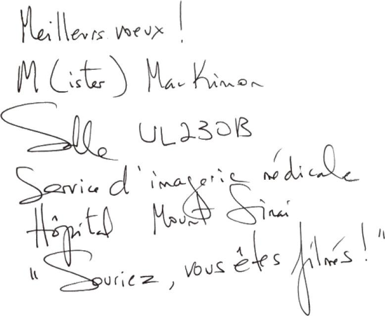

MARDI
Entend-on la feuille morte qui tombe dans une fissure ?
Elle rentre tout juste avec Maggie d’un atroce cours de natation parents-bambins dans la piscine à l’eau tiède du centre communautaire. Dans un chaos à peine maîtrisé, les pères et les mères blafards ballottaient çà et là, cramponnés à leurs tout-petits de dix-huit à vingt-quatre mois, sous l’œil d’une monitrice adolescente arborant un pince-nez. Les parents qui avaient un peu de couleur dans leur héritage prenaient une teinte particulièrement malsaine, le lustre attribuable aux pigments terni par le chlore – le papa libyen était le plus touché. Ils ont chanté Un mille à pied… et risqué À la claire fontaine, les poils de la poitrine flottant, la graisse des bras tremblotant et, dans le cas de Mary Rose, les sinus d’âge moyen bloqués, tandis que les minuscules adultes en puissance hurlaient ou rigolaient comme des fous, selon la proportion de nature et de culture propre à chacun. Puis on a produit la glissoire en plastique rouge qui séparait les collectionneurs de timbres des investisseurs en capital de risque. Après avoir sagement attendu son tour, Maggie a grimpé les deux marches – en soi une entreprise risquée, digne d’un vieux loup de mer, pour un enfant de cet âge –, tandis que Mary Rose entrait dans l’eau dans l’intention de l’attraper.
— O.K., Maggie !
Sauf qu’au lieu de se laisser glisser sur les fesses, Maggie s’est lancée à la tête de Mary Rose. Elles ont calé jusqu’au fond, le derrière en premier, et Mary Rose, accrochée à Maggie, a eu du mal à reprendre pied sur les carreaux glissants. Elles ont enfin refait surface au milieu d’un grand éclat de rire de la part de Maggie, d’un halètement de Mary Rose, qui a cru se vomir le cœur, et des regards ahuris des autres parents.
— La prochaine fois, tu dois glisser sur ton derrière, Maggie.
— O.K.
Elle est remontée et a récidivé.
Il est maintenant neuf heures et demie en ce mardi, le plus inoffensif des jours de la semaine, et Mary Rose est en sécurité dans sa cuisine. Sa peau sent le chlore et elle a les cheveux sérieusement aplatis, mais elle baigne dans le gemütlichkeit – sentiment de bien-être à la fois intraduisible et universellement reconnu. Celui qu’on éprouve quand on a vidé sa boîte de réception ou survécu à un écrasement d’avion. Assise par terre, Maggie réorganise l’armoire où sont entreposés les Tupperware – ce ne sont pas vraiment des Tupperware et, de toute façon, Mary Rose devra les remplacer par des contenants sans BPA. Elle ne devrait peut-être pas laisser Maggie manipuler ces objets, mais elle ne les met pas dans sa bouche, alors… Daisy apparaît et se dirige vers son écuelle, où elle engloutit un petit-déjeuner tardif en poussant une série de grognements – ces jours-ci, le cabot observe un horaire de douairière.
Appuyée sur le comptoir en stéatite, devant les grandes fenêtres de sa cuisine, Mary Rose lit le Toronto Star – dans le cahier gastronomique, il y a un article sur une femme ordinaire qui fait sa propre ricotta… et dirige une multinationale. Le mardi, c’est la matinée de Candace, qui sera bientôt là. Mieux vaut que Mary Rose s’écrase par terre et joue avec Maggie avant son arrivée. Elle ferme le journal et aperçoit du coin de l’œil une femme debout au coin de la rue. Elle tient un tout-petit par la main et a un autre enfant dans une poussette qui croule sous le poids des sacs d’épicerie. Elle essaie de traverser la rue, mais le tout-petit refuse. Il s’assied par terre. Il pleure. La mère attend – elle a la bonne attitude. La plus difficile à adopter. Mary Rose est passée par là.
Récemment, elle a lu dans le journal l’histoire d’une femme qui s’est tuée, a tué son mari et a tenté de tuer ses trois jeunes enfants. C’est arrivé à dix minutes à pied de chez elle, dans Harmony Street. L’article faisait mention d’un chien qui « errait sur les lieux ».
Elle observe Daisy, qui dort comme une souche devant la porte coulissante s’ouvrant sur la terrasse, ses pattes agitées de soubresauts – sans doute poursuit-elle un écureuil en rêve.
Dans l’article, on cite une voisine qui dit avoir vu la jeune femme, « gentille et tranquille, c’était un couple adorable », revenir du Loblaws en poussant son bébé dans un landau chargé de sacs, le tout-petit et un enfant de six ans à la main. « Elle avait le visage inexpressif. » Mary Rose se souvient d’une chose qu’a dite son amie Andrea – la sage-femme qui a « attrapé » Maggie. Dans l’ivresse de la première heure, marquée par une félicité sans mélange, les embrassades, les larmes et les rires, Andrea s’est tournée vers Hilary.
— Je vais te dire ce que je dis à toutes les mères post-partum : dans trois mois, tu auras envie de lancer ton bébé par la fenêtre. Appelle-moi.
Et si quelqu’un s’était approché de la gentille jeune femme d’Harmony Street et lui avait proposé de porter ses sacs ? Le résultat aurait-il été le même ? Était-elle déjà perdue ?
Les enfants ont survécu. Grâce au chien, probablement.
La mère avait tenté de leur trancher la gorge.
Mary Rose songe à sortir donner un coup de main à cette femme, peut-être moins patiente que dépressive. Si elle tue ses enfants une fois chez elle, ce sera la faute de Mary Rose – elle entend un bruit métallique derrière elle. Maggie secoue un objet dans un contenant en plastique… un cent ! Hil a trié de la petite monnaie avant de partir et elle a laissé tomber une pièce par terre. Elle a juré les avoir ramassées toutes et voilà que Maggie en tient une à la main, prête à la mettre dans sa bouche et à s’étouffer.
— Hé, donne le sou à mama, mon lapin.
— Non.
La petite serre le poing sur la pièce.
— Moi.
Mary Rose ouvre de force les doigts de Maggie et lui arrache le contenant, puis elle le lance dans le couloir, regrettant son geste avant même que l’objet rebondisse innocemment sur la porte. L’enfant hurle comme si elle venait d’assister à l’éviscération de son lapin de compagnie.
— Ça va, ma puce, mama ne l’a pas brisé.
Elle va chercher le contenant et le tend à Maggie qui, promptement, le jette à bout de bras. Bravo pour la leçon. Hil est une mère encore plus déplorable, elle qui a laissé une pièce de monnaie traîner par terre. Soudain, Mary Rose s’allonge, fait semblant de dormir et laisse Maggie la réveiller, encore et encore. Bientôt, les grands yeux bruns sont mouillés à force de rire et Mary Rose attrape la petite qui se propulse contre elle à répétition – c’est la seule forme de câlin à laquelle consent Maggie avec elle.
La porte de derrière s’ouvre, Daisy fait mwouf et Candace grimpe les quatre marches qui conduisent à la cuisine. Déjà, elle remonte les manches de son t-shirt moulant à manches longues, exsudant un air d’autorité joyeuse, attribuable peut-être moins à sa formation de puéricultrice qu’aux années qu’elle a passées comme barmaid à Manchester. En signe de salutations, le postérieur de Daisy bondit de gauche à droite. Maggie abandonne Mary Rose et va serrer « Candies » dans ses bras. Mary Rose voit la petite se blottir contre l’ample poitrine de Candace et elle se dit que Maggie l’aimerait peut-être, elle aussi, si elle passait seulement quelques heures par semaine avec elle, puis elle se reprend ; après tout, elle veut que Maggie aime Candace. Mary Rose est simplement jalouse. De Candace ou de Maggie ? Difficile à dire.
Candace s’adresse à la petite dont elle a la charge au moyen de phrases complètes et directes.
— Bonjour, Maggie, comment vas-tu aujourd’hui ?
Maggie répond de même.
— Je bien, Candies. Je vais au parc avec toi.
Mary Rose suit le mouvement.
— Et que vas-tu faire au parc, Maggie ?
— Non.
Mary Rose rit pour montrer à Candace qu’elle est cool, puis elle reprend les choses en main.
— En passant, Candace, nous allons progressivement éliminer le dodo du matin.
— Ah bon ? Je croyais que c’était déjà fait. Désolée, je la gardais avec moi toute la matinée. Vous préférez que je la couche ?
— Non, non, ouais, c’est terminé. Je ne savais juste pas si je vous en avais parlé ou pas. Super, merci.
Maggie sanglote de façon hystérique en voyant sa mère se diriger vers la porte. Mary Rose se dit que c’est la preuve d’un sain attachement.
En s’éloignant, elle entend Candace dire :
— Bon, bon, Maggie Magouille. Inutile de te mettre dans tous tes états.
•
Après Noël, sa mère meurt. Elle ne rentre pas au Canada pour assister aux funérailles. Elle n’a pas de bébé, mais elle a encore l’enfant. Elle l’entend pleurer. Est-il assez grand pour descendre de son berceau ? Elle s’allonge sur le canapé. La lumière venue du balcon reste longtemps la même. Elle entend l’enfant de deux ans pleurer. Le sent lui tirer les cheveux.
•
Douze minutes plus tard, Mary Rose verrouille son vélo devant l’hôpital Mount Sinai, dans University Avenue, au centre-ville, artère large de six voies balayée par le vent et bordée de centres médicaux et de gratte-ciel occupés par des compagnies d’assurances. Puis son frère lui téléphone et lui dit :
— Il faut que tu viennes voir mon derrière.
Il se trouve dans la succursale de Roots du Eaton Centre, dans Yonge Street, deux ou trois coins de rue plus loin.
— Rien ne me ferait plus plaisir, mais je dois passer une sonohystérographie.
Il ne demande pas de quoi il s’agit.
Dès dix heures quarante-cinq, elle est allongée sur la table d’examen, les pieds dans les étriers. Le gynécologue, le Dr Goldfinger – le doigt d’or, il n’y peut rien, c’est son nom de naissance – retire la « baguette magique » et la tend à l’infirmière. Terminée par une caméra, elle est recouverte d’un préservatif. On lui avait promis une gynécologue, mais elle a fini par se résigner parce que le Dr Goldfinger a plus de soixante ans et qu’il est très compétent. Et ce n’est pas comme si la Dre Irons – les fers, autre défaut de naissance – avait manié le spéculum avec délicatesse le jour où elle a diagnostiqué les fibromes bénins qui déchiquettent la paroi de l’utérus de Mary Rose.
On lui a donné le choix : tenir bon jusqu’à la ménopause, moment où les fibromes qui carburent à l’œstrogène mourront de leur belle mort, ou subir une procédure nouvelle en vertu de laquelle le chirurgien coupe l’approvisionnement en sang de l’utérus et provoque un infarctus, puis implante une pompe à morphine pour quelques jours – en d’autres termes, l’utérus subirait une crise cardiaque mortelle et elle-même souffrirait le martyre. Sinon, on peut réaliser une hystérectomie. Sa mère a subi une hystérectomie à l’époque où ils vivaient à Kingston. C’était après sa deuxième – troisième ? – fausse couche, et le médecin l’avait plus ou moins ordonnée, mais Dolly avait tout de même tenu à demander la permission du prêtre. Après, elle avait commencé à prendre ses « pilules de gentille maman ». Parfois, elle oubliait.
Son utérus est l’organe auquel Mary Rose a toujours évité de penser et elle y a bien réussi, nonobstant le calvaire mensuel, mais elle ne peut se résoudre à lancer contre lui une attaque sans merci. Une chose assez moche, d’accord, monsieur, mais qui est à moi. Son aventure au sein du complexe gynéco-industriel lui a appris que l’utérus au stade de la « périménopause » est considéré comme l’était autrefois l’appendice : un aimant à maladies qu’il convient d’éliminer au premier signe d’agitation. Mais comment savoir ? Bien qu’il soit trop tard pour ses amygdales, Mary Rose a encore son appendice, organe vestigial de la digestion, et compte donc parmi ceux qui ont une chance de survivre dans l’hypothèse où l’espèce serait condamnée à manger de l’écorce pour cause de changement climatique. C’est comme la section qu’on trouve à la fin de certains livres : Appendice. Des informations superflues dans l’immédiat, mais qui pourraient plus tard se révéler d’une importance vitale. Difficile, toutefois, d’imaginer l’autre organe faire double emploi comme terme littéraire : Utérus.
Mo a dit :
— On va essayer de te faire croire qu’il ne sert à rien, mais c’est faux. Il sert à quelque chose, alors garde-le.
Elle y a donc réfléchi pendant six mois, puis elle a surpris une conversation dans le brouhaha du vestiaire de la piscine :
— Essaie le lait de soja. C’est rempli de phyto-œstrogènes, et ça vaut mieux que de prendre de la pisse de jument gestante – c’est ça, le Premarin.
Le déclic n’a pas été immédiat, mais la lumière a fini par se faire dans son esprit, avec éclat par-dessus le marché.
Forte de sa volonté d’être une végétarienne au-dessus de tout soupçon, Mary Rose, depuis un an, remplaçait tout par le soja. Lait de soja, hamburgers de soja, bacon de soja – le soja, ce champion des métamorphoses, se prête à toutes les mutations. Comme la syphilis, il se déguise. Bref, c’est le Zelig du monde alimentaire. Elle s’est toujours doutée que le soja avait quelque chose de sinistre. Elle a enfin compris : elle gavait ses fibromes. Elle est rentrée de la piscine et a jeté toutes ses réserves de soja, tel le narcotrafiquant qui s’efforce de devancer la police.
Mary Rose tourne la tête pour observer le Dr Goldfinger, appliqué à examiner le champ gris qui palpite sur l’écran de l’ordinateur, fenêtre ouverte sur son utérus. Elle tend le cou pour les apercevoir dans l’obscurité. Ce sont seulement des fibromes, d’accord, mais y en a-t-il plus qu’avant ou moins ? Une infirmière entre en bruissant, arrache le préservatif sur la caméra et ressort en bruissant. Sans doute Mary Rose peut-elle retirer ses pieds des étriers – ceux-ci sont en métal nu, contrairement à ceux du cabinet de son médecin de famille, qu’on a la prévenance de recouvrir de gants isolants comme ceux dont on se sert pour sortir des plats du four. Elle interroge le visage du Dr Goldfinger dans l’espoir d’y lire le verdict. À une époque révolue, il l’aurait traitée, en redingote et lavallière, pour une « grossesse hystérique » – le mal qui a emporté Charlotte Brontë. Une autre infirmière entre en bruissant, sans raison apparente, et ressort de même. Mary Rose est consciente de sa chance : non seulement ne vit-elle pas à proximité d’un cimetière du Yorkshire, mais, en plus, elle n’a eu à endurer que des règles d’un mois, accompagnées de contractions comme en a une femme en plein travail, appelées « crampes » par les profanes, ainsi que de « ménorragies », journées de saignements abondants où elle a mis au monde des caillots de tissus utérins du calibre d’un avorton. Ils tombent dans la cuvette avec le plop d’une soupe épaisse – baroud d’honneur d’un système reproductif féminin qui ne rend pas les armes sans un dernier combat sanglant. En contradiction flagrante avec le personnage d’androgyne souple qu’elle cultive depuis toujours.
Elle n’a pas dit à Hil pourquoi elle avait rendez-vous chez le médecin. Inutile de trop insister sur les aléas de la ménopause avec sa petite amie. Partenaire. Épouse. Quelle importance ? Pourquoi ne dispose-t-on pas d’un meilleur mot ? Hormis amoureuse flagrante, partenaire platonique (ou asexuée) et conjointe démodée… Elle déteste la plupart des mots associés à la féminitude. Elle a du mal à utiliser le mot règles en dehors du contexte de la grammaire. Ce sont des mots poisseux, désagréables à prononcer. Ou encore inadéquats : vagin, par exemple, comme si tout était dit. Lesbienne : lézardeux. Ménopause : une femme acariâtre assise à côté de vous dans l’autocar qui va à Brockville. Bizarrement, le mot utérus convient dans la mesure où il fait penser à une congrégation de religieuses.
— Ils diminuent, déclare le Dr Goldfinger.
Il sourit brièvement et quitte la pièce.
Yes ! Pour un peu, elle brandirait le poing, mais c’est trop américain.
La première infirmière entre et lui tend une énorme lingette stérile pour essuyer le gel lubrifiant. Pendant que Mary Rose fait sa toilette, la deuxième infirmière entre à son tour. En souriant timidement, chacune produit, en même temps qu’un stylo, un exemplaire de JonKitty McRae. Voyage dans l’autre dimension et de JonKitty McRae. Évadés de l’autre dimension.
Elle écrit :

Puis elle remet son pantalon.
— Le troisième, c’est pour quand ?
•
Elle pense que c’est peut-être encore l’hiver, mais elle n’en est pas sûre. Du canapé, par la porte du balcon, elle ne verrait, même si elle se mettait en position assise, que la cime des arbres et le ciel – la Forêt-Noire est couverte de conifères, alors, sans neige, elle ne peut jurer de rien. Elle a l’idée de punaiser un calendrier au mur : ainsi, sans avoir à se lever, elle saura quelle est la saison. Elle est couchée de côté sur le canapé, une main sous la joue, l’autre tendue, la paume sur le dessus. La pierre de lune est à sa main, et son bébé est mort. Elle a envie de faire un interurbain pour dire à sa mère : « J’ai perdu le garçon, mama. » Puis elle se rappelle que sa mère est morte.
Elle a renvoyé l’Allemande. Elle n’a pas besoin d’aide, elle a juste un enfant à la maison pendant la journée.
L’enfant, debout de l’autre côté de la table basse, en maillot et en couche, hurle. Rigide. Sur ses joues, des larmes rondes semblent jaillir directement de son visage. Dolly ferme les yeux. Tant qu’elle restera couchée, rien de mal ne peut arriver.
•
Mary Rose sort de la salle UL230B et se perd aussitôt. L’ascenseur qu’elle a pris en venant était-il orange ou jaune ? Elle balaie des yeux un couloir qui se termine par une porte à double battant marquée : SALLE D’INTERVENTION. Elle part dans la direction opposée en regrettant de ne pas avoir songé à prendre un sac de miettes de pain et en essayant de ne pas respirer trop à fond. En contexte médical, des mots parfaitement hygiéniques finissent par donner la nausée : intervention… L’euphémisme se charge de tous les traits négatifs qu’il avait pour but de cacher. Mary Rose ne prise pas beaucoup les hôpitaux, mais, dans cette aile, au moins – et elle en est reconnaissante –, on lui épargne l’odeur du désinfectant et de l’alcool à friction, ces odeurs chirurgicales qui provoquent l’effroi, lui donnent le frisson et font monter à ses yeux des larmes d’histoires de fantômes. L’odeur des os qu’on… Elle se rappelle à elle-même que la pire odeur est celle de la nourriture d’hôpital. Le pain – la compote de pommes, les pois verts mous – du chagrin, en vérité. Elle n’a jamais compris qu’on puisse avoir envie de faire carrière à l’hôpital. Sa propre mère était infirmière diplômée. Infirmière de salle d’opération, par-dessus le marché. Il faut dire qu’elle n’avait pas peur du sang.
Elle passe devant la MAMMOGRAPHIE – au moins, la presse à paninis lui est épargnée aujourd’hui – et, au coin, tombe sur la CLINIQUE DE DENSITÉ OSSEUSE. Est-ce là la cause de la douleur fantasque dans son bras ? Et s’il s’agissait non pas d’une douleur fantôme, après tout, mais bien des signes avant-coureurs de l’ostéoporose ? Une autre des « largesses de la ménopause » ? Sur les radiographies, rien du tout. Mais c’était il y a six mois…
Elle s’imagine dans la peau du lieutenant Columbo de la vieille série télévisée des années soixante-dix. Fripé, borgne, la démarche traînante, il était le maître absolu de la fausse sortie. Alors que le suspect croyait le niais lieutenant de police reparti les mains vides, Columbo s’arrêtait sur le pas de la porte, se retournait et disait : « Vous savez, il y a encore un détail qui me chicote… » Puis il coinçait le coupable.
Mary Rose aperçoit une sortie de secours à côté du symbole d’un escalier et d’un avertissement : « L’OUVERTURE DE CETTE PORTE DÉCLENCHERA UNE ALARME. » Elle ouvre.
•
Un son différent, à présent. Une plainte rauque, gémissante. Plus de larmes. Un souffle chaud contre son visage. Une odeur de coton mouillé, d’urine. Le mot, une supplication sèche, « maman ». Répété. De plus en plus insistant – venu d’une source nouvelle, d’une terre brûlée. Elle sent la petite main se poser sur son visage, chaude. Le mot est là, de nouveau, en accéléré, métal contre métal, le mot va s’embraser : Maman ! Des doigts palpent ses paupières, les soulèvent. La main remonte jusqu’à son crâne, agrippe une poignée de ses cheveux et tire, fort, sa tête va de gauche à droite, l’enfant la secoue. Elle n’ouvre pas les yeux. Au prix d’un effort surhumain, elle parvient à se retourner face au dossier du canapé. Au bout d’un moment, la pluie de coups sur son dos et ses épaules s’arrête. L’enfant ne peut pas vraiment lui faire du mal, elle a seulement deux ans.
•
Depuis qu’elle a subi sa dernière chirurgie orthopédique à quatorze ans jusqu’à tout récemment, Mary Rose n’a eu aucun motif de se plaindre de son bras, hormis, de loin en loin, une légère secousse histrionique. En bon petit soldat, il a tenu le coup pendant un été dans la Réserve de l’armée, les rigueurs de l’école de théâtre, d’innombrables escapades avinées, des séances d’improvisation corporelle intensives, deux bébés. Jusqu’à l’été dernier.
C’était leur premier été sans la maman d’Hil. L’automne précédent, Patricia était morte de complications consécutives à une intervention chirurgicale de routine. C’était une femme magnifique avec des yeux bleu cristal et d’exquises manières – une femme qui, par jeu, appelait son mari « le docteur », mais parlait avec vénération de leurs « royaumes » respectifs – le sien étant la maison et les enfants. Hil a eu le cœur brisé, évidemment… même si, pendant la réception qui a suivi les funérailles, Mary Rose avait été sidérée de l’entendre dire sur un ton amer à une amie d’enfance :
— Ma mère est morte parce qu’elle avait mal au dos.
C’était vers la fin de leurs épuisantes vacances d’été sur la côte Est. Maggie aurait bientôt deux ans et Matthew, en proie à une régression soudaine, avait exigé ses propres couches. Le rivage était hospitalier, mais un enfant pouvait se noyer dans trois centimètres d’eau et les bois étaient remplis d’ours et d’insectes porteurs de la maladie de Lyme…
— C’est faux, Mister. Pas « remplis ».
— L’Ixodes scapularis migre vers le nord. Il suffit d’une seule tique.
Sans compter que les enfants risquaient de s’aventurer dans la forêt et de mourir d’hypothermie.
— Comment ? a demandé Hilary qui, par miracle, était parvenue à lire un roman complet au cours de ces deux exténuantes semaines.
Elles ont fermé le vieux camp de chasse et chargé les bagages dans la voiture en surveillant d’un œil leurs deux tout-petits – sa mère avait peut-être raison, en fin de compte, Mary Rose était simplement trop vieille pour jouer à ce jeu. Ils s’apprêtaient à mettre le cap sur Halifax, où ils passeraient une dernière nuit avec le père d’Hil et sa sœur cadette. Là, Mary Rose, avant le souper, est montée se coucher sur le canapé de la salle de loisirs de son beau-père et a été seize heures sans pouvoir se lever.
Tout le monde a cru qu’elle était fatiguée, mais Mary Rose, elle, a compris qu’elle était partie. Elle était passée sous une ligne. Comme dans le diagramme de son manuel de science à l’école secondaire, celui où on voyait une coupe transversale de l’écorce terrestre. Loin sous la surface se trouvait la « nappe phréatique ». Mary Rose était descendue sous la nappe phréatique, paralysée. Incapable de cligner de l’œil, de dormir, elle s’imaginait étalée et suspendue dans le sol. À un moment donné, elle a entendu la famille chanter « Joyeux anniversaire », au rez-de-chaussée, et elle s’est souvenue : ce jour-là, Maggie célébrait ses deux ans.
Où était l’interrupteur ? Elle ne savait pas qu’il était possible de se coucher un jour pour ne plus jamais se relever. Était-ce une forme de « paralysie hystérique » ? Même si elle se relevait cette fois-ci, elle risquait, dans un proche avenir, d’être tétanisée de nouveau. Elle avait mis les pieds là, il y avait un tracé, un sentier.
Où était l’interrupteur ? Daisy est entrée et, avec sa truffe humide, lui a donné un petit coup de boule. Hilary n’a pas arrêté de lui apporter du jus. Le père d’Hil est venu la voir. Les cheveux blancs, grand, il était à la fois l’archétype du médecin des séries télévisées des années soixante et un vrai médecin – « plus ou moins vrai », se plaisait-il à dire. Un psychiatre. Il a tiré une chaise et lui a doucement demandé si elle avait « pris quelque chose ». Elle a failli répondre : « À part le lit ? »
— Non, a-t-elle dit. Je suis juste fatiguée.
Il a hoché la tête, puis il lui a demandé si elle avait besoin de quelque chose. Lui aurait-il filé un comprimé de Valium, là, sans hésiter ? La mère d’Hil avait effectivement eu mal au dos. Un verre de vin est une chose, un verre de vin accompagné d’un comprimé de Percocet en est une autre…
— C’est très gentil, Alisdair, a répondu Mary Rose, mais je me sens mieux, maintenant.
Elle aimait son beau-père, mais se réjouissait de ne pas avoir été la bénéficiaire de ses méthodes modernes, dans le bon vieux temps. Elle se demandait s’il avait déjà administré des électrochocs. Au moins, lui et sa femme n’avaient pas fait campagne pour tenter de changer l’orientation sexuelle de leur fille. Mary Rose a remballé cet épisode hystérique et l’a laissé derrière elle.
Puis elles ont entrepris le périple vers l’ouest en s’arrêtant comme d’habitude à Ottawa, où les parents de Mary Rose, bercés par de la musique d’ascenseur, habitent dans le confort climatisé d’un tout nouveau projet de copropriétés appelé Corrigan’s Keep pour des motifs au moins aussi obscurs que ceux qui justifient les Vale, Height, Castle View et Down en tous genres qui entourent les villes nord-américaines. La douleur lui a tendu une embuscade, la deuxième nuit, dans la chambre des invités, au sous-sol. Elle s’est réveillée, surprise. 2 :00, indiquait le réveil en chiffres rouges scintillants. Elle s’est levée avec précaution pour ne pas réveiller Hil – le matelas était comme une plaque de plâtre posée sur des ressorts. Selon Hil, il avait simplement besoin d’une couche de mousse à mémoire. N’était-ce pas notre cas à tous ? Mary Rose est passée entre Maggie dans son petit parc et Matthew sur la chaise-lit pliante IKEA.
Elle s’est glissée dans la salle de bains et a allumé la lumière. Le miroir lui a rendu une image d’une précision chirurgicale : cheveux ébouriffés, joues fripées par les draps. Sur son bras, les cicatrices, la veine, pas de bleus.
Mary Rose a l’habitude des milliers de maux qui sont le lot de la chair maternelle. Elle s’est fait des coupures aux doigts qui ont mis des mois à cicatriser parce qu’elle passe son temps à rincer toutes sortes d’objets dans l’évier, a découvert des bosses sur sa tête en se lavant les cheveux, des bleus sur ses jambes en se rasant. Tout cela faisait partie du quotidien d’une mère. Qui songe à s’épargner la morsure de la table basse sur un mollet lorsqu’il s’agit d’empêcher un enfant de tomber ? La douleur qui ne laisse pas la moindre trace engendre une forme d’insatisfaction.
La douleur ne l’a pas lâchée d’une semelle jusqu’au retour à Toronto et elle a persisté durant l’automne. Mary Rose était sur le point de faire une recherche sur Google lorsque Hil l’avait surprise et lui avait dicté sa loi.
— Appelle la Dre Judy.
Mary Rose avait donc docilement pris rendez-vous avec le médecin de famille. Puis, comme si le simple fait de demander une vraie aide médicale avait éveillé un soupçon, quelque chose avait commencé à la « chicoter ».
De vieux souvenirs avaient pris une signification nouvelle. Elle s’était rappelé le jour où le Dr Ferry avait réprimandé sa mère dans le hall d’entrée. Âgée de dix ans, elle étrennait sa troisième écharpe : « … ce qui peut arriver ? Qu’est-ce que ça peut bien être ? ! » Elle avait entendu sa mère raconter l’incident encore et encore, comme si c’était une histoire drôle – « Il m’a passé un de ces savons ! » –, preuve irréfutable, déjà à l’époque, que quelque chose n’allait pas. Elle a revu le profil fermé de son père qui faisait les cent pas dans les couloirs du service de radiologie, s’est rejoué les propos qu’il a tenus d’un ton guilleret : « Ils vont prendre des photos de tout ton squelette pour voir s’il y a des trous ailleurs. » Et elle a alors compris : il était terrifié.
Quatre ans après la première opération, debout dans le cabinet de consultation du chirurgien, elle a détecté autre chose sur le visage de sa mère lorsque le médecin a déclaré :
— Ils sont revenus.
Ils vivaient à Ottawa, à l’époque, mais, deux fois par année, ils faisaient le trajet jusqu’à l’hôpital général de Kingston pour son examen – après, ils s’arrêtaient toujours manger de la pizza et c’était agréable d’avoir ses parents à elle toute seule. Imposant, le Dr Sorokin se tenait devant les radiographies insérées dans la boîte à lumière et indiquait, avec le bout de son crayon, les ombres nouvelles sur son humérus.
— Ici, ici et ici.
Son père a hoché la tête, les lèvres pincées. Mary Rose et sa mère, en un rare moment d’unisson, se sont tournées vers la fenêtre – on distinguait au loin la grande cheminée de l’hôpital, les briques ternes contre le ciel de novembre. Elle a vu des larmes glisser sur les joues de sa mère et, à sa grande consternation, s’est rendu compte qu’elle était sur le point de l’imiter. Avec le détachement d’une fille de quatorze ans, elle s’est dit intérieurement : « Ce n’est pas moi qui pleure, c’est juste mon corps qui se souvient de la douleur. »
Elle ne se souvenait pas d’avoir vu sa mère pleurer. Ces larmes lui avaient donné à réfléchir, mais le visage de sa mère regardant par la fenêtre trahissait autre chose. Quelque chose de grave. Quelque chose de digne. Du chagrin.
Les interventions chirurgicales avaient un avantage : c’étaient les meilleurs moments passés avec sa mère. À l’hôpital, Dolly était dans son élément, et ce n’est qu’avec elle que Mary Rose se sentait en sécurité – grâce à son visage, à sa voix, même la douleur semblait neuve et raisonnable. En particulier la dernière fois, alors que Mary Rose était assez vieille pour craindre une erreur du chirurgien.
— C’est le bras gauche, celui qui a déjà une cicatrice, leur a-t-elle dit pendant qu’ils poussaient son lit à roulettes vers la salle d’opération.
Ils firent ceux qui n’avaient rien entendu. Ils portaient des masques. Une grosse lumière était suspendue au-dessus d’elle. Tout n’était que cliquetis et acier, les avant-bras du médecin étaient poilus, ses mains d’une blancheur crayeuse. Elle ne pouvait pas bouger, mais elle pouvait parler. On lui avait fait une piqûre dans le couloir, où on l’avait parquée parmi d’autres lits à roulettes, semblables à des avions qui attendent leur tour sur le tarmac, à la queue leu leu. Une infirmière était arrivée et avait planté l’aiguille dans sa cuisse, sans avertissement. Le médicament s’était douloureusement infiltré dans son système sanguin.
— Qu’est-ce que c’est ? a demandé Mary Rose.
— Un calmant, a répondu l’infirmière.
Mary Rose était déjà calme, mais, au fur et à mesure que ses membres prenaient la lourdeur du béton, elle a senti l’angoisse monter en elle. Le temps a vacillé et disparu et sauté, puis son tour est venu de décoller. On l’a introduite dans la salle d’opération, glissée sous les lampes d’interrogatoire, puis on a planté une aiguille plus fine dans le dos de sa main – la seringue reposait contre sa peau, à la façon d’un insecte patient. Avant que l’anesthésique l’éclabousse de noir, elle a dit :
— Ne le coupez pas.
Elle a peut-être entendu un rire.
Elle était aussi assez lucide pour savoir qu’elle risquait de ne pas se réveiller.
— C’est pratiquement impossible, avait dit son père avec son petit rire incrédule.
À quatorze ans, cependant, Mary Rose n’avait pas particulièrement apprécié le mot « pratiquement ».
Pendant la convalescence de Mary Rose, Dolly entrait en coup de vent, très « Broadway » avec son béret écossais à motif léopard et son manteau assorti. Les autres, y compris son père, fatiguaient beaucoup Mary Rose. Elle souriait, faisait semblant que tout allait bien. Maman, elle, entrait en coup de vent, appelait les infirmières par leur prénom et changeait ses draps. Dolly, ayant constaté l’apparition de plaies de lit sur les talons et les coudes de Mary Rose, l’a obligée à se lever.
— C’est bien. Maintenant, fais tourner tes pieds sur tes chevilles, ouvre et ferme tes poings, parfait, n’arrête pas de bouger.
À force de rester immobile, on risquait la gangrène. Dolly l’obligeait à respirer à fond pour lui éviter la pneumonie.
— C’est ça, remplis bien tes poumons. Vide-les, maintenant.
À rester trop longtemps en position allongée, on risquait la mort.
Les infirmières adoraient Dolly, elle était l’une des leurs. Par conséquent, elles avaient des attentions particulières pour Mary Rose. Sauf l’infirmière de nuit, qui n’avait pas rencontré sa mère.
L’automne précédent, quand la douleur dans son bras s’était incrustée, une idée qui la chicotait inconsciemment depuis un certain temps s’était imposée à son esprit : elle a commencé à se demander si, à propos de son bras, ses parents savaient des choses qu’ils lui cachaient. Et si les kystes osseux chez l’enfant n’étaient pas bénins, en fin de compte ? Et si, en réalité, elle avait souffert d’un cancer des os et qu’ils ne lui avaient rien dit parce que tout était rentré dans l’ordre ? Elle devait savoir. Que se passerait-il en cas de récidive ? Elle devait savoir parce que… c’était son histoire à elle, et ses parents, s’ils gardaient cette histoire en otage, devaient la lui rendre. Tout de suite après avoir pris rendez-vous avec la Dre Judy, elle a téléphoné de nouveau et réclamé ses dossiers médicaux à l’hôpital général de Kingston, où avaient été réalisées les deux greffes osseuses.
C’était un mardi matin, comme aujourd’hui, un matin sans enfants du début de l’automne dernier. Assise dans la salle d’examen de la Dre Judy, Mary Rose évitait les objets trop cliniques comme les trousses de prélèvements et les seringues hypodermiques, se concentrait plutôt sur les gants à four colorés qui recouvraient les étriers. Malgré tout, elle a senti son ventre se glacer en voyant Judy ouvrir la grande enveloppe en papier kraft et parcourir en diagonale quelques pages photocopiées avant de dire à voix haute :
— Kystes osseux bénins de l’enfant.
— C’est tout ?
— À quoi t’attendais-tu ?
— Cancer ?
Hypocondriaque. Pense un peu à toutes les personnes vraiment atteintes d’un cancer, tandis que toi, tu es là à renifler des tumeurs, comme un cochon chercheur de truffes toxiques.
— Absolument pas.
C’était une bonne nouvelle, assurément, et elle a proprement remis sa queue entre ses jambes, prête à sortir du cabinet de Judy, consciente de sa dette envers cette bête mythique, « le contribuable », qui avait financé sa lubie, et se reprochant amèrement d’avoir eu une réaction exagérée, typique de la pseudo-artiste un peu fofolle qu’elle était. Souhaitant que son bras si spécial le soit encore davantage.
— Pas si vite. Et la douleur ?
— Ah ouais, j’oubliais, dit Mary Rose.
— C’est pour ça que tu es venue.
Judy lui a fait enlever son haut et a palpé le bras, l’os… Sensation sinistre, mais pas vraiment douloureuse.
— Ils peuvent revenir ?
— Bien sûr que non.
— Parfait.
Rien n’est plus rassurant que d’entendre un médecin tuer vos craintes dans l’œuf.
Mais Judy a ajouté :
— Pourquoi est-ce que je dis ça ? En fait, je n’en suis pas absolument certaine. Si tu es inquiète, je peux t’envoyer consulter un chirurgien orthopédiste.
— Tu es inquiète, toi ?
— Non, mais je préfère pécher par excès de prudence.
La Dre Judy l’a donc dirigée vers un spécialiste et, par un mardi plutôt chaud d’octobre, quelques semaines plus tard, Mary Rose a laissé Maggie avec Candace et est partie sur son vélo. Cette fois, elle a traversé Kensington Market, en voie d’embourgeoisement rapide, pour se rendre au Toronto Western Hospital, dans Bathurst Street, en face de la boutique appelée Balloon King. Dans la vitrine du Roi du ballon, des squelettes enjoués batifolaient avec des sorcières et des citrouilles. Elle a verrouillé son vélo près du service des urgences et retiré son veston. « Il fait trop chaud pour la saison. » Quand renoncerons-nous enfin au déni ? Comme si, ce jour-là, la Terre était un peu décoiffée, rien de plus.
Elle a attendu un bon moment à la Radiologie, mais elle avait apporté un livre, Les étonnants pouvoirs de transformation du cerveau. Naturellement, son bras se portait comme un charme.
Elle s’est allongée sur le billard pour la radio. Le technicien a demandé :
— Est-il possible que vous soyez enceinte ?
Tu veux rire ? a-t-elle songé.
— Non, a-t-elle répondu poliment.
Elle a dû s’avouer que la question lui avait fait plaisir, de la même façon qu’une femme de trente ans est heureuse qu’on demande à voir sa carte dans un bar. Il s’est glissé derrière son abri antinucléaire, dans un coin, et il en est aussitôt ressorti. Terminé. Pas de cashounk comme dans le bon vieux temps.
Le technicien, ex-citoyen du bloc de l’Est à la mine lugubre – sans doute un chirurgien du cerveau interdit de pratique par la bureaucratie canadienne – a semblé oublier sa présence. Elle s’est sentie penaude, elle n’avait rien du tout. On demande le Dr Freud au téléphone !
Elle a attendu que le komrad lui tende ses radios pour les apporter elle-même au spécialiste, mais, après quelques instants, il a levé les yeux et, surpris de la trouver encore là, il s’est contenté de marmonner :
— Numérique.
En plus d’être une hypocondriaque, elle était un dinosaure… Plus personne ne se baladait avec des radiographies. Il lui a expliqué comment se rendre à la clinique d’orthopédie et elle a hoché la tête :
— … aile ouest, ascenseurs nord-est…
… deuxième étoile à gauche et tout droit jusqu’au matin…
D’un pas traînant, elle est passée devant un placard rempli de Phisohex, des portes qui lui ont laissé voir, malgré elle, des couvre-lits tout bossés, s’est efforcée de ne pas respirer trop à fond les miasmes hospitaliers, a croisé une station d’infirmières où personne ne s’est donné la peine de lever les yeux sur elle. Et si j’étais une maniaque venue massacrer des patients innocents ? Elle a croisé une douche oculaire d’urgence, un tableau laminé illustrant les divers degrés de « déchets dangereux », jusqu’à ce qu’elle trouve enfin les ascenseurs. Au cinquième étage, elle a émergé dans une aire ouverte éclairée par un puits de lumière, où une rondelette bénévole portant un badge lui a dit de suivre les traces de pas blanches.
— Blanc comme les os ! a-t-elle pépié.
Mary Rose a trouvé une chaise dans la salle d’attente – encore tiède après le passage de l’occupant précédent – et, en se calant dans l’ample empreinte laissée par un cul plus gros que le sien, a frémi à la pensée des exhalaisons qui émanaient du vinyle. Tel un papillon de nuit séduit par une flamme, ses yeux ont été attirés par l’écran muet du téléviseur juché dans un coin – des caméras de surveillance en temps réel montraient l’autoroute Don Valley, tandis que, au bas de l’écran, des manchettes défilaient en bande étroite, à la façon d’un roman postmoderne, son contenu ni chronologique ni lié aux paroles que l’animatrice articulait sans bruit, reproduites en sous-titrage dans une bande au haut de l’écran, mais manifestement inexactes : … « CE QUE VŒUX DIRE ETRE HUMIN AU JOUR DE D’HUI… » Elle détache son regard, ouvre le livre et lit l’histoire d’une fille née avec la moitié de son cerveau.
— Mme MacKinnon, annonce la brusque réceptionniste antillaise.
Mary Rose lève les yeux – Mme MacKinnon, c’est ma mère, ma vieille ! – et se lève docilement.
Le Dr Ostroph tourne vers Mary Rose l’écran de son ordinateur – elle est bien révolue, l’époque des radiographies ombreuses tenues devant la boîte à lumière. Tout aussi ombreux, mais sur un écran d’ordinateur à présent, figurait, dans toute sa gloire médicolégale, l’os long du haut de son bras gauche. Son humérus.
À l’aide d’un crayon – certaines choses ne changent pas –, il a pointé les anciennes fractures, indiscernables aux yeux de Mary Rose :
— … on voit les endroits où l’os s’est cicatrisé, ici, ici et ici…
Elle a remarqué que le Dr Ostroph était très pâle, mais doté d’une excellente structure osseuse. Elle a décidé d’être sa meilleure patiente de la journée, la plus éclairée, la moins désespérée. Il avait des bâtons de golf sur sa cravate. Il parlait vite, elle a parlé plus vite, surpassant le spécialiste dans le registre de la précipitation.
— Alors une blessure qui serait sans effet sur un os normal entraîne la fracture d’un os avec un kyste.
Serviable, elle a paraphrasé les propos du médecin, au cas il ne se comprendrait pas lui-même.
— On parle alors de fracture pathologique.
— Bien sûr, dit-elle.
Comme sur la flaque d’eau gelée.
— Les kystes osseux passent souvent inaperçus parce qu’ils sont asymptomatiques, sauf en cas de fracture.
Comme sur la patinoire.
— Pardon ? Vous avez dit ?
Il a parlé avec lenteur – la prenait-il pour une idiote ?
— On ne sent les kystes qu’en cas de fracture de l’os.
Comme quand son père lui a fait faire l’avion.
Et parce qu’elle doit avoir un faciès aussi expressif que celui d’une carpe, il ajoute :
— Ça fait mal. C’est le premier indice.
Comme… toutes les autres fois.
Il racontait quelque chose. Elle s’est demandé s’il savait qui elle était – peut-être ses filles ou sa femme avaient-elles ses livres. Ce soir, en rentrant à la maison, il dirait : « Hé, vous ne devinerez jamais qui j’ai reçu à la clinique, aujourd’hui… » Il s’est interrompu. Elle a cligné des yeux.
— Pardon ?
— Je vous demande où vous vous situez sur l’échelle de la douleur.
— Qu’est-ce que c’est ?
— Une échelle de un à dix, un représentant une douleur faible.
Elle a décidé de jouer franc jeu.
— En ce moment, je ne suis même pas sur l’échelle.
— Mais vous avez souffert, ces derniers temps.
— Ça va et ça vient.
Comme la grenouille en haut-de-forme et redingote du dessin animé, celle qui chante et danse à condition que personne ne la regarde. Elle a ri.
— De un à dix ?
Il s’impatientait. Quelle était la bonne réponse ? C’était quoi, la question, déjà ?
— Euh, trois. Huit ?
Il a haussé le sourcil.
— J’ai un seuil de tolérance plutôt élevé, a-t-elle dit.
— La douleur est subjective.
— Ils sont revenus ?
— Non.
— C’est une possibilité ?
— Je ne connais aucune étude qui permette de le croire.
— Est-ce une question d’adhérences…, a-t-elle demandé. Comme de vieux tissus cicatriciels ?
— Quoi donc ?
— La… sensibilité.
— Tout cela devrait s’être résorbé il y a longtemps déjà.
— D’accord. Alors il n’y a rien que je doive faire ou éviter ?
— Ne vous jetez pas devant une voiture.
— Ha ! ha !
Il n’était pas fâché contre elle, après tout.
— Mais chez les enfants, les fractures sont difficiles à diagnostiquer, n’est-ce pas ?
— Chez les très jeunes enfants, on parle de fractures en bois vert. Et non, on ne les détecte pas toujours.
Il tapait sur son clavier. Sans doute, en ce moment même, facturait-il la consultation au gouvernement. Sa façon de la congédier, peut-être ?
— En particulier quand on ne sait pas qu’il s’est passé quelque chose. Si, par exemple, l’enfant n’a pas pleuré, ne s’est plaint de rien.
Il a levé les yeux.
— Pourquoi l’enfant ne se serait-il pas plaint ? Mon enfant à moi n’arrête jamais de se plaindre.
— J’ai le cancer ?
Il n’a même pas esquissé un sourire.
— Je n’en vois aucune indication.
— Merci. Je pose la question parce que ma partenaire et mon médecin de famille ont insisté. Alors elles seront heureuses de savoir que…
Il avait retourné l’écran et elle avait franchi la moitié de la distance qui la séparait de la porte lorsqu’il a lancé :
— Et à propos de la douleur ?
— De toute évidence, c’est dans ma tête.
Elle a souri. Elle n’allait pas lui laisser la satisfaction de prononcer les mots.
— Ouais, eh bien, c’est justement ça, la douleur. De l’information.
— Absolument.
La plasticité cérébrale. Elle a brandi son livre.
— Je lisais justement un passage à propos des…
— … messages.
— Exactement. Des messages neurologiques…
— C’est comme si une sorte de vieux sentier se rouvre dans le cerveau, et on a littéralement affaire à la « mémoire de la douleur ».
Une illustration d’un livre de contes de fées de son enfance est apparue soudain devant les yeux de Mary Rose : à coups d’épée, un prince se fraie un chemin au milieu des ronces dans un sentier envahi par la végétation, au-delà duquel il aperçoit le château de la Belle au bois dormant. Elle a imité le ton saccadé du Dr Ostroph.
— Alors on ferme le sentier de la douleur avec quoi, hein, avec quoi ? La chirurgie ?
— En général, ça ne marche pas.
— Alors…
— Les antidépresseurs.
— Ah bon ?
Avait-elle raté quelque chose ?
— Je ne peux pas en prescrire.
— Non, ça va, je n’en veux pas, même s’il s’agit d’une idée plutôt fascinante…
— Tenez…
Il griffonne quelques mots sur son bloc d’ordonnances et lui tend une feuille.
Tylenol 4.
— Ah.
— Vous voulez des 5 ?
— Non, non, ça ira, j’en suis certaine.
— Il s’agit bien ici de douleurs osseuses, n’est-ce pas ?
— Ouais, c’est juste que je n’aime pas beaucoup prendre des médicaments, vous comprenez ?
Il s’est de nouveau penché sur son bloc, a déchiré une autre feuille et la lui a remise en disant :
— Ça, c’est ici, dans l’immeuble.
Elle a cru qu’il parlait de la pharmacie et s’est dit que, dans cette seconde ordonnance, il lui prescrivait du Tylenol moins fort.
— Merci.
Elle a suivi à l’envers les traces de pas blanches jusqu’aux ascenseurs et a traversé l’aire de restauration remplie d’échos jusqu’à la pharmacie – autant avoir quelque chose sous la main, au cas où la douleur reviendrait en force, se munir de ses propres pilules de « gentille maman ». Apprendre que son bras avait été dans un état de friabilité chronique tout au long de son enfance – et que, en fait, il s’était cassé à quelques reprises – lui avait donné à réfléchir. À quelques reprises. Souvent. Mais qu’est-ce que ça changeait, au fond ? C’est dans la nature des kystes osseux de se fracturer sans tambour ni trompette – à preuve, le tour d’avion qu’elle avait fait, à quatre ans, et qui expliquait sans doute l’un des ici au bout du crayon du Dr Ostroph… Combien d’ici en tout ? La tour d’avion avait été à l’origine de la première écharpe, mais elle avait pu subir des fractures au préalable. Pourtant, comment expliquer que ses douleurs aient été suffisantes pour justifier une écharpe, mais pas des radiographies ? Parce que personne n’a cru qu’elle avait pu se fracturer le bras parce que les kystes osseux entraînent des fractures et que personne ne savait qu’elle avait des kystes osseux – lequel est venu en premier, l’œuf ou la poule ? Sa mère lui a confectionné une écharpe parce que Mary Rose semblait s’être étiré un muscle. Dans cette optique, Dolly peut être considérée comme très attentive – faire autant d’histoires pour un simple muscle. Si Mary Rose avait indiqué clairement que son bras la faisait souffrir – si elle avait pleuré –, elle aurait peut-être eu droit à des radiographies et elle se serait évité toute cette saga. Elle n’avait qu’à s’en prendre à elle-même.
Elle a tendu la seconde ordonnance et le pharmacien se dirigeait déjà vers l’officine lorsqu’il s’est arrêté et a fait demi-tour.
— Ce n’est pas une ordonnance, a-t-il dit avec son accent chinois.
— Mais oui. C’est le Dr…
— Le Dr Ostroph, oui, mais pas pour des médicaments, mademoiselle, regardez…
Elle a jeté un coup d’œil. Il l’orientait vers un psychiatre.
— Merci, a-t-elle dit avant de repartir les mains vides.
Ce soir-là, Hil a apporté un bol de nachos, de la salsa et deux verres de vin dans la salle de loisirs du sous-sol. Elle portait sa robe de chambre violette duveteuse, qu’on pourrait croire démodée, mais qui est en réalité super sexy – Hil a l’art de transformer un torchon à vaisselle en septième voile. Sa frange foncée a effleuré la joue de Mary Rose quand elle s’est penchée pour lui administrer un bisou on ne peut plus conjugal disant je t’aime et je sais qu’on est toutes les deux trop fatiguées, alors regardons simplement la télé, puis elle lui a demandé :
— Et alors, comment ça s’est passé chez le médecin ?
— Il a dit que je n’avais rien physiquement.
Mary Rose était agenouillée devant le lecteur de DVD.
— On en était à quel disque ?
— La douleur ?
— Pas de douleur sans fracture.
— Mais alors…
— Ouais, non, mon bras n’est pas cassé en ce moment, c’est un phénomène appelé « souvenir de la douleur », un truc neurologique, est-ce qu’on regarde ?
— Quoi ?
— Les Soprano.
Mary Rose insère le disque cinq dans l’appareil.
— Mais s’il te fait mal seulement quand il est cassé, ça veut dire que…
— Il ne me fait pas mal. J’ai mentalement chassé la douleur.
Élancement.
— Ça veut dire que, quand tu étais petite, il était cassé chaque fois que tu avais mal.
— Impossible à déterminer sans radio. Nous en étions à quel épisode ?
— Au milieu du troisième, je crois.
Mary Rose a appuyé sur lire.
— Pourquoi ils ne t’ont pas fait passer des radiographies ?
— Ils ont fini par le faire.
— Pourquoi ont-ils attendu si longtemps ?
Mary Rose a appuyé sur pause, légèrement contrariée – c’était leur seule chance de revoir un épisode entier avant de sombrer dans le sommeil, sous l’effet de l’épuisement, ou d’être interrompues par un réveil intempestif de Maggie.
— Parce que personne n’a jamais pensé que mon bras pouvait être cassé, voilà pourquoi.
Elle a mis le DVD en avance rapide et ri en voyant les images familières défiler à toute vitesse, avec des secousses.
— Mais tu avais mal, a insisté Hil.
— Oui, mais j’étais si stoïque que personne ne se doutait de rien.
— Même ton frère était au courant.
Mary Rose a de nouveau appuyé sur pause.
— O.K., ma chérie, ma mère était occupée, en deuil, O.K. ? En colère, enceinte, je ne sais pas, elle a eu une enfance difficile, alors, par comparaison, elle a dû croire que, pour moi, c’était du gâteau.
— Elle était infirmière.
— Exactement, les enfants des professionnels de la santé ont rarement droit à un pansement, regarde ton père et toi, par exemple. Il ne t’a même pas donné une aspirine quand il a recousu ton doigt pendant ce fameux voyage de pêche, et tu avais seulement huit ans.
— Il est psychiatre.
— Justement.
Lire. Tony Soprano s’est calé dans son fauteuil rembourré et…
— Combien de fois ta mère t’a-t-elle fait une écharpe avec un vieux foulard ? Elle devait bien se douter de quelque chose.
Mary Rose a soupiré.
— Trois fois, et c’était un foulard neuf, en général, alors on regarde ou pas ?
La robe de chambre d’Hil s’est légèrement entrouverte – façon ménagère des années cinquante, c’est très séduisant. Mary Rose l’imagine qui se penche pour nettoyer le four… en string et jarretelles. Qu’est-ce qu’un beau brin de fille comme toi fait dans un endroit pareil ? Entre alors la femme venue poser les carreaux, une ceinture à outils à la taille. Hé, je peux te donner un coup de main ?… Hank a raison, elle devrait écrire de la littérature érotique, terme que les femmes utilisent pour éviter le mot « pornographie ».
— Excuse-moi, Hil. Qu’est-ce que tu as dit ?
— Je n’ai rien dit.
Hilary était un détecteur d’authenticité fait femme. Les petits mensonges qui permettent à de nombreux mariages de flotter gaiement, ou au moins doucement, étaient pour elle de véritables provocations. Non pas que Mary Rose mentait. Dans le regard d’Hil, Mary Rose reconnaissait à présent le mélange de curiosité et d’inquiétude indiquant qu’Hil s’était mise à écouter « au-delà » des mots. C’était une bonne et une mauvaise nouvelle. En tout cas, Mary Rose serait bientôt comprise, que ça lui plaise ou non.
— Écoute, Hil, il faut que tu comprennes : c’était une autre époque.
— L’époque des gens stupides ?
— Je t’en prie !
— Désolée…
— Pas la peine, c’est juste que… Je n’ai pas le cancer, O.K. ? Je n’ai pas de kystes osseux, je ne bats pas mon enfant.
Elle a ri.
— Quel est le rapport ?
De manière très peu seyante, les adorables yeux bleus d’Hil se sont plissés, en même temps que sa bouche.
— Essaies-tu de me dire que tu as frappé les enfants ?
— Bien sûr que non.
Sur l’écran, Tony Soprano est paralysé, les paupières mi-closes, le doigt levé, comme pour ordonner un meurtre ou commander une pizza. Lire.
— C’est nouveau, a dit Hil.
Pause.
— Quoi donc ?
— Chaque fois que tu as eu mal, ton bras était cassé. C’est de l’information nouvelle.
Impossible de gagner une joute oratoire vous opposant à Hilary Creaghan du moment qu’elle vous a dans sa mire socratique – elle a raté sa vocation de procureure de la Couronne. Peut-être est-il encore temps pour elle de s’inscrire à l’école de droit et de trouver un travail assorti d’un régime d’avantages sociaux : ainsi, Mary Rose n’aurait pas à écrire le troisième tome de sa trilogie.
— D’accord, tu as raison, mais ça ne change rien, et c’est justement ce que j’essaie de…
— Tu as grandi en normalisant la douleur.
— Je le savais déjà.
— Non, tu savais que tu avais un seuil de tolérance à la douleur élevé, mais tu ne savais pas pourquoi. Je ne crois pas qu’on naisse avec un seuil de tolérance à la douleur de la même façon qu’on naît avec des kystes osseux. C’est de l’acquis. Si Maggie avait mal au bras…
— Ce n’est pas le cas.
— Comment le sais-tu ?
— Je suis sa mère.
— Tu viens de répondre à ta propre question.
— Pourquoi me soumets-tu à un contre-interrogatoire, Hil ? Je te répète seulement ce que le docteur a dit.
— Pourquoi es-tu tellement fâchée contre moi ?
— Je déteste discuter, contrairement à toi, je déteste débattre, au secondaire, on m’a forcée à faire partie d’un club de débats et j’ai été marquée pour la vie, le club était présidé par Dwight Dumphy, qui avait une petite barbe humide. Je ne suis pas fâchée, je plaisante, c’est tout, c’est toi qui es fâchée et hostile.
— C’est faux, Mister. Et ça me blesse quand tu me parles comme ça.
Soupir.
— Comme quoi ?
— Comme si j’étais ton ennemie.
— Excuse-moi, c’est culturel, tu comprends ? Je suis à moitié méditerranéenne, et non wasp, c’est toi qui es effrayante avec ton calme et ta raison – où vas-tu ?
— Je pense que je vais me coucher.
— Ne t’en va pas ! Ça me rend folle quand tu…
Mary Rose a serré les poings et les a appuyés sur son front.
Hilary s’est rassise.
— Qu’est-ce que tu veux que je fasse, Mary Rose ?
Mary Rose enfonçait ses jointures dans son front, paralysée par la colère, furieuse contre elle-même d’être furieuse. La seule façon de désamorcer cette fureur consisterait à avoir, avec Hilary, une énorme querelle au cours de laquelle celle-ci donnerait libre cours à son courroux de victime avant de se réhumaniser, aux yeux de Mary Rose, en pleurant, après quoi elle remonterait, de manière rassurante, sur son piédestal, d’où elle se montrerait froidement critique envers Mary Rose, qui se cognerait la tête en silence et finirait par se balancer en position fœtale sur le lit de la chambre d’amis pour ne pas réveiller les enfants, où elle attendrait le retrait de la vague d’agents neurochimiques corrosifs, se repentirait de tout et notamment, avec un maximum de ferveur, du fait d’être née. À moins qu’Hil la gifle. Elle a furtivement levé les yeux entre ses poings serrés.
Hil, cependant, ne pleurait pas. Elle ne semblait pas non plus sur le point de la frapper. Elle posait sur elle un regard… qui a dérouté Mary Rose. Et l’a détournée de la fureur.
— Regarde Les Soprano avec moi, a répondu humblement Mary Rose.
— O.K.
Lire. Tony était furieux contre la Dre Melfi pour avoir dit du mal de sa mère, qui venait de mettre sa tête à prix. Mary Rose a ri. Hilary restait silencieuse.
Mary Rose a dit :
— Je viens de me souvenir d’une chose que me répétait ma mère quand je lui disais que j’avais mal au bras : « Si tu souffres, c’est à cause du mal qui sort de toi. »
— Tu ne m’as pas dit qu’elle ignorait que tu avais mal ?
Mary Rose a décidé de laisser Hil avoir le dernier mot. C’était une femme, après tout. Mary Rose aussi, mais… Hil était plus traditionnellement féminine… même si elle ressemblait beaucoup au père de Mary Rose. Vous épousez votre père en la personne d’une femme qui a un faible pour les talons hauts et les sacs à main. Qu’est-ce que ça veut dire ?
Plus tard ce soir-là, elles étaient au lit et Mary Rose sombrait délicieusement dans le sommeil lorsqu’elle s’est réveillée sans raison. Elle a tendu l’oreille. Hil dormait.
— Tu es réveillée, Hil ?
— Hm ?
Mary Rose a senti la main d’Hil lui enserrer la taille – même à moitié endormie, Hil avait un toucher élégant. Elle a entremêlé ses doigts à ceux d’Hil et s’est tournée vers elle. Peut-être pourraient-elles faire l’amour en dormant à moitié – comme dans le bon vieux temps, à l’époque où Hil n’avait pas besoin de se faire masser le dos pendant vingt minutes pour se mettre en train. Mais, comme si elle avait entendu Mary Rose réfléchir, Hilary s’est levée d’un bond.
— Désolée, a dit Mary Rose.
— De quoi ?
— De t’avoir réveillée.
— Tu ne m’as pas réveillée, j’ai faim.
— Ah ! J’ai cru que tu… J’ai pensé que tu avais pensé que j’essayais de… Laisse tomber.
— Désolée, mon ange, a dit Hil. Je t’ai réveillée.
— En fait, c’est le contraire.
— Tu avais envie de faire l’amour ?
— Non, non, je voulais juste… hum…
— Je vais aller manger des céréales.
— Tu veux que je te masse le dos ?
— Non, j’ai faim, c’est tout.
— Tu permets que je descende avec toi ?
— À t’entendre, j’ai l’impression d’être un ascenseur. Bien sûr que tu peux descendre, Mister.
Mary Rose ne parvenait pas à se débarrasser d’un sentiment abject – imputable peut-être à la désorientation causée par l’absence d’une énorme querelle avec Hil –, mais c’était comme si elle était de retour en troisième année et qu’elle avait ce honteux béguin pour Lisa Snodgrass. En se levant, elle sent la capsule familière se briser dans son ventre et l’élixir sombre se répandre dans son sang. La culpabilité. Mais pourquoi ? Par suite de son éducation catholique, elle était sujette à des attaques de culpabilité, comme les vieux soldats à des crises récurrentes de paludisme. Peut-être aussi était-elle née avec un faible seuil de tolérance à la culpabilité, de la même façon que certaines personnes naissent avec les yeux verts ou les cheveux noirs. Ou des kystes osseux.
Elle a suivi Hilary au rez-de-chaussée. Daisy a fait irruption et, en véritable véhicule d’urgence sur quatre pattes, les a devancées, puis la lumière s’est faite d’un coup dans l’esprit de Mary Rose : elle était coupable d’avoir gaspillé l’argent des contribuables en allant voir l’orthopédiste, eurêka. L’élixir sombre a été chassé par un nauséabond nuage de honte, comme si on l’avait surprise en train de se masturber dans la salle d’attente du Dr Ostroph – encore une réflexion aussi absurde qu’inopportune, clitoris humérus !
Elle préfère encore la culpabilité à la honte – l’élixir sombre au nuage pestilentiel. Élixir sombre… Rappel des Larmes noires avec lesquelles l’Elfe d’ébène remplit sa mare enchantée. Dans le deuxième livre, Kitty, qui a pour mission de sauver Jon, reçoit l’aide d’une fille aux pieds jolis mais douloureux qui est en réalité une licorne sous l’emprise d’un sort de désenchantement. La fille peut conduire Kitty au Pays-qui-n’a-pas-de-nom, où coulent les Larmes noires, à condition que Kitty lui apporte l’instrument magique dont le chant lui rendra sa vraie nature : une flûte faite à partir de l’os d’un Oiseau de prière… Mais, s’est demandé Mary Rose, de quoi les Larmes noires étaient-elles faites ? Et comment le Dr Quinn s’en servirait-il pour mener à bien son projet diabolique ? Ces questions, elle les réservait pour le troisième tome, Retour dans l’autre dimension.
Elle a pris le stylo aimanté posé près du téléphone et a griffonné sur la liste d’épicerie : Larmes noires = chagrin/culpabilité ? Guérit/cause cancer ?
Hil, devant le garde-manger, s’est servi un bol de céréales.
— Il manque quelque chose pour demain ? Je peux m’arrêter à l’épicerie, si tu veux.
— Non, j’ai juste pensé à quelque chose.
— Pour le troisième ?
— Peut-être.
Elle a senti Hil lui poser un baiser sur la nuque, mais elle s’est esquivée et dirigée vers le réfrigérateur, où elle a tiré le tiroir du congélateur et promptement oublié ce qu’elle cherchait.
— Tu veux recommencer à travailler ? a demandé Hil.
— Pourquoi ? Je suis si nulle à la maison ?
Elle fait celle qui a voulu plaisanter.
— Qu’est-ce que tu fabriques ?
— Je nettoie la bande de vinyle du tiroir du congélateur, répond Mary Rose. Tu devrais voir ça. Elle est sur le point de germer.
— Regarde les emporte-pièces que j’ai achetés pour faire des biscuits d’Halloween, a-t-elle lancé, le lendemain, en montant des sacs de jute dans la cuisine. Deux pour un dollar.
— Tu n’étais pas obligée d’aller faire les courses, bébé. J’aurais pu m’en occuper.
— Tu peux m’aider à vider les sacs.
Hilary a brandi une boîte bleue.
— Nous avons déjà des cotons-tiges.
— Dans notre salle de bains. Ceux-ci sont pour la cuisine.
— … Pourquoi ?
— Avec quoi penses-tu que je nettoie la bande de vinyle du congélateur ? Et regarde les boutons du Bose. On voit les bords, maintenant. Avant, ils étaient tout poisseux. Et là ? Tout le monde pense qu’un lave-vaisselle est propre par définition, non ?
Elle l’ouvre et montre l’étendue des dégâts avec délectation.
— Regarde bien sur les côtés. C’est dégueulasse, non ?
Elle a retiré la pellicule de plastique recouvrant la boîte de cotons-tiges.
— Tu ne pourrais pas monter chercher des cotons-tiges quand tu en as besoin ?
Mary Rose s’est redressée et a soupiré sans se douter, jusqu’à ce qu’elle ouvre la bouche, de la profondeur de son indignation.
— Pourquoi veux-tu que je fasse une chose pareille ? Qu’est-ce qui m’empêche, dans ma propre maison, d’avoir une réserve de cotons-tiges destinés à un usage particulier ? Rien ne t’oblige à les voir, rien ne t’oblige à les utiliser – pourquoi le ferais-tu puisque c’est moi qui m’occupe des courses et du gros ménage ?
Elle s’entend articuler avec trop de précision, selon l’habitude de son père, faire étalage d’un calme proprement caricatural, mais elle est incapable de se retenir.
— Je ne comprends pas pourquoi, à quarante-huit ans, je n’aurais pas gagné, en plus d’un magot intéressant, le droit d’avoir des cotons-tiges dans la cuisine.
En voyant l’expression d’Hilary se durcir, elle s’est mise à trembler. Cette fois, elle était allée trop loin. Elle a ri.
— Je me moque de moi-même, Hilary. Rien de plus.
Maggie est montée sur l’escabeau, a ouvert le robinet et a commencé à « faire la vaisselle ». Matthew est arrivé dans la cuisine en poussant son train. Mary Rose était consciente de n’avoir aucune chance : Hilary l’achèverait d’un coup, sachant que Mary Rose ne courrait pas le risque d’une escalade en présence des enfants et que, par conséquent, elle encaisserait stoïquement les coups portés par sa partenaire.
Hil, cependant, a dit :
— Tu as raison. Je me demande juste s’il est nécessaire de nettoyer autant.
— C’est important pour moi. Ça fait partie de mon travail.
— Nous avons une femme de ménage.
— Elle nettoie sommairement.
— On n’a qu’à lui demander de laver la cuisine avec des cotons-tiges.
Hil semble amusée.
Mary Rose se rend compte qu’il lui tardait de renouer avec cette expression, avec l’Hilary indulgente, la femme facile à vivre qui sait rire des travers de Mary Rose et les transformer en simples lubies. Et elle était là, magnifique, souriante, surpassant même sa tolérance sympathique de la veille, alors que Mary Rose jouait les Tony Soprano. Je t’aime, Hil.
Pourtant, elle a dit :
— À tes yeux, c’est peut-être méprisable, mais je considère que c’est un emploi du temps légitime. Il y a des maîtres zen qui le font.
Hilary s’est carrément esclaffée, mais Mary Rose a conservé son maintien de pierre.
— Si ça fait ton bonheur, a dit Hil.
— Ça fait mon bonheur, a sifflé Mary Rose entre ses dents serrées.
Et elle a vu la lueur d’amusement s’éteindre dans les yeux d’Hilary.
•
L’enfant est debout, les paumes à plat sur la porte vitrée du balcon.
— Ne reste pas là, dit Dolly.
Bang. Bang, bang.
C’est une journée chaude et ensoleillée. Avril, maintenant. Mais elle a fermé et verrouillé les portes – son mari a beau affirmer que les barreaux sont trop rapprochés pour que l’enfant puisse tomber, elle n’en est pas convaincue.
Bang, bang !
— Arrête ça immédiatement.
Bang. Bang. Bang.
Elle se tourne vers le dossier du canapé. Elle peut rester couchée, rien de mal ne peut arriver.
•
L’alarme ne sonne pas – en tout cas, elle n’entend rien –, mais elle descend quand même au pas de course les six ou sept volées de marches. Tout en bas, elle pousse une autre porte de secours, certaine d’émerger dans la galerie commerciale et l’aire de restauration de l’hôpital Mount Sinai. Elle débouche plutôt dans un couloir paisible fait de parpaings vert chagrin. Droit devant elle est parqué un chariot à roulettes jaune sur le flanc duquel est écrit en majuscules INCINÉRER. Elle retourne dans la cage d’escalier et ne respire qu’après avoir traversé la galerie bondée et gagné University Avenue, où elle inhale une profonde bouffée de la saine circulation du mardi. Il est onze heures dix. Elle dispose donc de cinquante minutes de temps complètement libre avant de devoir rentrer pour relever Candace.
Elle enfourche son vélo, consciente de la sensation spongieuse plutôt agréable laissée par le gel lubrifiant, et remonte le canyon urbain. Sur sa gauche, le Princess Margaret, l’hôpital construit par le cancer ; sur sa droite, l’hôpital pour enfants, dont l’entrée principale est ornée d’un train au néon ayant pour but d’apaiser les craintes – surtout celles des parents. Debout sur ses pédales, elle grimpe le versant d’un lit lacustre ancien, roule sur des mystères séculaires ainsi que sur des os et des batailles jusqu’à Queen’s Park, noble édifice néogothique où siège le gouvernement provincial, celui avec lequel son frère assure la liaison. Elle contourne l’Assemblée législative et s’engage en roue libre dans le parc proprement dit, sur lequel préside un roi Édouard VII en cuivre, monté sur son fougueux coursier. En dépit des efforts de la municipalité, le pénis du cheval est perpétuellement peint en rouge, peut-être à cause de la proximité de l’Université de Toronto et de ses flèches malicieuses. Elle lève les yeux sans s’arrêter – en hauteur, le thrène des branches dénudées annonce la nouvelle vie sur le point d’éclater. Cette année, elle ne ratera pas le moment où le monde se change en vert.
Elle sort du parc devant le monument commémoratif des guerres, et le Musée royal de l’Ontario (ROM) est sur sa gauche. Avec ses squelettes de dinosaures et ses momies, ses totems et ses trésors funéraires, c’est le rite de passage obligé de tous les écoliers de la province. La seule chose qui sépare un monument commémoratif d’un musée, c’est le temps. Et le pouvoir. Au vainqueur, les récits… Elle atteint Bloor Street et prend à gauche, vers l’ouest.
Le musée a récemment fait l’objet d’une vive controverse due à une annexe en verre que certains ont qualifiée de monument architectural de classe mondiale et que d’autres ont vilipendée en la traitant de bernache. Toronto est ainsi. Les immeubles vraiment magnifiques font leur boulot sans attirer beaucoup d’attention, sans hauteur excessive ni fractionnement de la lumière. Certains, l’hôtel de ville, par exemple, témoignent de l’optimisme des années soixante, où l’espace était abondant et où il n’y avait qu’à le courber. Quant au reste, l’utilitarisme victorien prédomine. Si certains quartiers se sont embourgeoisés et que d’autres sont devenus branchés, de vastes secteurs conservent la rectitude spartiate qui a valu à la ville son surnom de « Toronto la Vertueuse ». Un mélange de corruption et de consensus a souvent freiné les visionnaires. Et donc, dans l’imaginaire populaire, la ville ne s’est pas cristallisée autour d’une icône unique. La tour du CN est haute. Comme beaucoup d’autres choses. Ce que Toronto a à revendre, c’est de la vitalité. Elle en déborde. C’est une métropole composée de non-suiveurs, une collection de collectivités venues des quatre coins de la planète qui gonflent et se chevauchent mutuellement. Au coin de Spadina Avenue, Mary Rose s’arrête au feu. Elle devrait peut-être traverser et aller faire un saut au Centre communautaire juif, question de se remettre sérieusement en forme – « Bienvenue aux non-juifs ! » En se faufilant tant bien que mal parmi la foule des piétons, elle aperçoit toutefois Renée, son ex, assise dans la vitrine du Second Cup adjacent, et elle poursuit son chemin, s’arrête le temps de donner un dollar à une femme qui, au coin nord-ouest de Bloor et Spadina, poste qu’elle occupe depuis dix ans, scande :
— Z’avez un dollar pour moi pis mon fils ?
Mary Rose se retient à grand-peine de la corriger, « mon fils et moi », en laissant tomber une pièce de un dollar dans la tasse Tim Hortons qui semble avoir été rongée. Elle n’a jamais vu la moindre trace du fils en question – de toute évidence, la femme a des problèmes bien plus graves qu’une grammaire déficiente. Mary Rose poursuit sur Bloor Street, passe devant la pharmacie où Hil et elle ont dépensé une petite fortune en tests de grossesse et se demande quoi faire des quarante minutes qu’il lui reste.
Elle habite là depuis assez longtemps pour avoir vu la rue changer de vêtements, sinon de personnalité ; derrière chaque façade, elle voit encore les couches précédentes, comme des affiches de cinéma superposées. Elle passe devant le Bloor Superfresh que tout le monde appelle encore le Bloor Super Save – le premier établissement ouvert vingt-quatre heures de ce bout de rue. Avant l’ère des magasins ouverts le dimanche, certaines allées étaient bloquées par un cordon de sécurité, car, pour d’obscurs motifs juridiques, il était permis, le jour du Seigneur, d’acheter du lait, mais pas des cotons-tiges. Elle croise l’un des papas de l’école de Matthew.
— Salut, Mary Rose.
C’est le caricaturiste politique… ou le physicien ? Elle ralentit.
— Salut… Keith.
— Quand le prochain va-t-il sortir ?
Drôle de formulation, comme si le livre se terrait dans un placard.
— Quand Maggie sera à l’université ! réplique-t-elle.
Elle passe devant la boutique d’aliments naturels au parfum médicinal de sarrasin. Autrefois, les végétariens étaient des rabat-joie cadavériques qui ne mangeaient que pour éliminer la nourriture qu’ils avaient déjà ingurgitée. À présent, cependant, le secteur regorge d’aimables végétaliens – certaines choses sont effectivement moins dures avec le temps.
Passé le coin de Brunswick Avenue, où des universitaires tire-au-flanc se blottissent au-dessus d’un cappuccino sur la terrasse en décrépitude du By the Way Café (ex-Lickin’ Chicken), une femme assise à une table branlante la salue d’un geste de la main. Mary Rose lui rend la pareille.
— Salut… (Aucune idée).
Cette femme était autrefois guichetière au Poor Alex Theater – elle a beaucoup vieilli. Elle fait peut-être seulement son âge. Mary Rose prend note : passé cinquante ans, éviter à tout prix les châles boliviens, à moins d’être soi-même bolivienne. Elle passe devant la confiserie qui a été un restaurant hongrois, la boutique de vêtements branchée qui a été un restaurant hongrois, la quincaillerie Wiener’s qui a toujours été la quincaillerie Wiener’s – devant Indra Crafts, une phalange d’écolières sentent des bâtonnets d’encens et examinent de minuscules éléphants sculptés sur une table jonchée d’articles ; parmi la cohorte de piétons qui s’étire sur tous les trottoirs de la vie, elle reconnaît l’autochtone qui marche avec son berger allemand sans laisse. Elle poursuit, passe devant le vieux Bloor Cinema d’un côté et Lee’s Palace de l’autre, temple du rock indépendant où, dans le bon vieux temps, elle a exécuté quelques performances, s’est soûlée et a rencontré Renée ; ses murs extérieurs sont toujours tapissés de graffiti, mais, désormais, ils sont l’œuvre de professionnels. Elle passe devant un restaurant libanais qui a été un restaurant hongrois, un restaurant hongrois, la librairie qui est encore une librairie et le Starbucks qui a été tout le reste.
Elle se dit que Renée a peut-être pris deux ou trois kilos, mais elle était très belle quand Mary Rose l’a croisée un peu plus tôt ; elle s’est laissé pousser les cheveux et elle ressemble un peu à Carole King si Carole King portait un cafetan en laine bouillie bleue et des bijoux faits de galets et de pièces d’ordinateurs. Mary Rose et Renée sont en bons termes depuis des années. Même Hilary a réussi à vaincre son allergie à l’ex de Mary Rose. Renée est du genre à pouvoir transformer n’importe quel bidule en objet d’art. Quand elles étaient ensemble, elle était également incapable de transformer quoi que ce soit en emploi. En la quittant, Mary Rose était rongée par la culpabilité, persuadée que Renée se décomposerait, boirait jusqu’à ce que mort s’ensuive et finirait dans la rue. Z’avez un dollar ? Renée s’est trouvé un poste dans un collège communautaire et a acheté une copropriété. Elle a gardé les chats, dont l’un, toujours en vie, a dix-huit ans.
Mary Rose freine au feu et songe à traverser la rue pour aller faire un tour chez Honest Ed’s, le grand magasin aux néons clignotants « où seuls les planchers ne sont pas droits ! ». Mais elle aurait besoin de plus de temps, sans parler d’un GPS pour trouver la sortie. Elle traverse la rue et hésite devant la boutique Secrets From Your Sister. Des spécialistes de l’ajustement, et nulle part en vue de vieille dame noueuse qui tente par la force de vous pousser vers le bon soutien-gorge. (Le mot lui-même est un bêlement de clairon et une éructation, annonciateur d’humiliation, tante Sadie palpant la poitrine de Mary Rose à onze ans, « Elle a des bosses, Dolly ! ») Mary Rose cadenasse son vélo. Elle est une femme d’âge moyen, une mère tout ce qu’il y a de plus mariée, rien n’est moins suggestif que la décision spontanée de s’arrêter pour s’acheter un soutien-gorge par une matinée du milieu de la semaine. La vérité, c’est qu’elle a besoin d’un solide büstenhalter, comme on dit en Allemagne.
Elle entre dans la boutique, qui propose un savant mélange de lingerie et de « vêtements intimes » – en janvier, elle a emmené sa mère ici. Une jeune femme efficace, avec des talons hauts et un chignon retenu par des baguettes chinoises, lui sourit pour indiquer qu’elle la reconnaît, et Mary Rose se prépare à accueillir avec sérénité le flot de témoignages d’admiration de même que l’inévitable « Le troisième, c’est pour quand ? ». La jeune femme, cependant, dit :
— Vous êtes la fille de Dolly.
— C’est exact.
— Comment va-t-elle ?
Dûment informée de la situation de Dolly, la jeune femme déclare :
— Pour vous faire un bon ajustement, j’aurai besoin de plus que cinq minutes.
Elle examine d’un œil inquisiteur la poitrine de Mary Rose, comme si elle avait la faculté de voir à travers et jusqu’au soutien-gorge de sport élimé et mal ajusté.
— Je vais vous donner un rendez-vous.
Comme pour une intervention.
— Pas la peine. Je ferai une saucette à la boutique à la première occasion.
Faire une saucette. Une expression de sa mère.
Elle essaie de fuir, mais elle est arrêtée dans son élan par une petite chose en dentelle, aussi ornée qu’immatérielle. Hil serait absolument irrésistible là-dedans. Ce sous-vêtement léger comme l’air vaudrait son non-pesant d’or en massages de dos…
— Cette coupe vous irait comme un gant, dit la jeune femme. Vous êtes en super forme et plutôt petite.
— Pas pour moi. Pour ma partenaire.
La jeune femme ne cille pas.
— Votre femme adorera.
Mary Rose se tourne brusquement vers elle, mais, de toute évidence, la jeune femme a employé le mot en f sans la moindre intention ironique. Mary Rose a soudain conscience d’avoir raté quelque chose et éprouve une fois de plus de la difficulté à suivre l’évolution d’un monde qu’elle a elle-même contribué à changer.
— Ma… femme ne devrait pas venir pour un ajustement ?
— Non, c’est pour vous.
Tout se précipite. Et soudain, Mary Rose est de retour dans la rue avec l’émoustillante tenue hyper-féminine enveloppée dans du papier de soie. Elle fourre le paquet dans son blouson en laine polaire trois-saisons de L.L. Bean, saute sur son vélo et, avec une énergie renouvelée, pédale jusqu’à Howland Avenue en roulant contre le flot de voitures à sens unique.
Tante Sadie a fait un mariage arrangé qui, vingt-cinq ans plus tard, a fini par se transformer en amour ; elle a alors lancé un couteau à la tête d’oncle Leo, qui s’est penché. La relation de Mary Rose avec Renée s’est prolongée bien après sa date de péremption et aurait sans doute pris fin beaucoup plus tôt si Dolly et Duncan ne s’étaient pas opposés aussi vivement à cette union et à tout ce qu’elle représentait. Renée l’a soutenue dans les pires moments ; ensemble, elles ont essuyé la tempête, d’abord tendrement dans leur appartement, puis dans leur propre maison, où Dolly et Duncan n’ont jamais mis les pieds. À titre de féministe certifiée, Mary Rose aurait dû comprendre la première fois que Renée l’a frappée. Mais il y avait des circonstances atténuantes… l’alcool, la reconnaissance professionnelle (celle de Mary Rose), la dépression (celle de Renée)… Sans parler de l’exaspérante manie qu’a Mary Rose de trouver à redire sur tout à propos de l’autre, dès qu’elle a obtenu son attention pleine et entière. Paf. En toute justice, Hil l’avait frappée une ou deux fois, elle aussi, dans les premiers temps. Mary Rose aurait su se faire cogner par n’importe qui. Mère Teresa elle-même n’aurait sans doute pas résisté à l’envie de lui en allonger une.
Elle lâche le guidon et se détend, surfe sur les dos d’âne de l’Annex avec ses grandes et vieilles maisons victoriennes. Une femme passe au volant d’une Volvo ; on dirait Margaret Atwood. C’est Margaret Atwood.
Elle range son vélo dans la remise, entre dans la maison et gravit à pas feutrés les marches du fond : Candace et Maggie sont assises devant la petite table en bois qui, dans un coin de la salle à manger, sert au bricolage. Candace tend à Maggie le bouchon d’un crayon feutre et attend qu’elle le mette en place. C’est très long. Puis elle lui en passe un autre et attend. Maggie est concentrée au maximum, Candace d’un calme parfait.
En haut, dans sa salle-penderie, Mary Rose sort la ridicule poignée de matière vaporeuse de Secrets From Your Sister et la cache derrière une paire de richelieus dans son rangement pour chaussures suspendu. L’objet y sera en sécurité en attendant qu’elle trouve un moment pour le rapporter, un jour que Mlle Baguettes ne sera pas en service.
Au rez-de-chaussée, le voyant lumineux des messages clignote.
— C’est ta mère, tu n’es pas là.
Clic.
— Toujours pas là ? Tu as reçu le paquiet ?
Clic.
Un message automatisé.
— Pour réclamer votre prix, faites le deux…
Et un autre message de sa copine Gigi, aux intonations piquantes.
— Salut, Mister. Je fais de la sauce à spaghettis. Je t’en apporte ou tu passes avec les enfants ?
Sans doute Gigi est-elle entre deux épisodes de la série policière qu’elle pilote à titre de directrice de production. Le commandement d’une équipe d’intervention tactique fictive ne l’a jamais empêchée de confectionner des boulettes de viande, remarquez. Il serait peut-être amusant de la voir – à moins que le fait de passer du temps avec une personne dotée d’une vie sociale fonctionnelle se révèle trop accablant.
Elle glisse la main dans sa poche pour payer la nounou.
— Merci, Candace. À jeudi.
— Vous n’avez plus besoin de moi demain soir ?
— Ah ouais, c’est vrai, le cinéma. À demain.
Candace sort par la porte de derrière et Mary Rose ouvre celle de devant pour vérifier la boîte aux lettres. Pas de paquet. En revanche, il y a une lettre de Postes Canada. Elle la décachette. AVIS DE SUSPENSION DE LA TRAHISON À DOMICILE. Elle cligne des yeux. LIVRAISON. Suit une liste de motifs assortis de cases à cocher. ATTAQUE PAR UN CHIEN. Crochet. Elle sent sa langue s’épaissir, son œsophage s’engluer. Daisy va être emmenée et éliminée. C’est la loi. Peu importe qu’elle soit à moitié aveugle et douce avec les enfants, peu importe qu’elle soit vieille, c’est une pit-bull.
Que dira-t-elle à Matthew ? Hil va être catastrophée. Maggie grandira avec un sentiment de deuil, sans savoir pourquoi. Mary Rose se force à lire la suite.
Son cœur recommence à battre. Elle doit seulement signer un formulaire dans lequel elle s’engage à garder Daisy à l’intérieur pendant les heures de livraison du courrier, sans quoi on demandera au Contrôle animal de procéder à une inspection. La case MORSURE DE CHIEN n’est pas cochée. Dieu merci.
Autrefois, on surnommait les pit-bulls les « chiens-nounous » parce qu’ils étaient parfaits avec les enfants. Dans les années soixante-dix, il y a eu une épidémie de saint-bernards qui ont défiguré des enfants. Pourtant, personne n’a songé à les interdire. Elle signe le formulaire et le pose sur un coin de la table de la cuisine. Maggie et elle le laisseront au bureau de poste en allant chercher Matthew à l’école, cet après-midi – il y en a un au fond de la pharmacie, dans Bloor Street. Sans doute le paquiet y est-il retenu. Elle pourra téléphoner à sa mère et dénouer le nœud le plus récent ; c’est beaucoup mieux que de l’endurer en personne quand elle ira accueillir ses parents à leur descente du train, la semaine prochaine. Cette semaine ? Quand arrivent-ils, au juste ?
Dring-dring.
•
Sa fille rentre de l’école.
— Te sens-tu mieux, maman ?
— Occupe-toi de ta sœur.
À l’âge de sa fille, elle aidait déjà à élever les plus jeunes. Sa propre mère s’était mariée à douze ans.
Avant que son mari rentre du travail, Dolly se change, met une jolie robe, se peint les lèvres et enfile des chaussures à talon haut.
— Viens m’aider à préparer le souper, Maureen.
Puis elle prend un chiffon et efface les minuscules empreintes et les traînées de mucosités sur la porte du balcon.
Il entre et l’embrasse.
— Dites donc, quelque chose sent rudement bon, madame !
Il suspend sa casquette d’uniforme à la patère à trois crochets du vestibule et prend l’enfant dans ses bras.
— Salut, Mister. Comment va mon petit voyou ?
— Mets la table, Maureen, dit Dolly.
•
— Maggie, il faut y aller, pose le crayon feutre et viens voir mama.
Maggie obéit. Wow. Puis, sans qu’on le lui demande, elle se dirige vers le haut des marches qui, de la cuisine, vont à la porte de derrière, puis elle s’assied en souriant à Mary Rose. Ce sourire a quelque chose de déconcertant… de moqueur, presque. Si c’était Matthew, Mary Rose le qualifierait d’espiègle. Consciente de ces deux poids, deux mesures, Mary Rose lui rend son sourire et se positionne sur la marche inférieure. Daisy passe devant elles et s’assied d’un air impatient. Elle agite la queue en prévision de la promenade imminente. Mary Rose prend un petit pied dans une main et une botte de neige dans l’autre – elles passeront chercher Matthew et s’arrêteront au bureau de poste au retour pour y déposer le formulaire, ce qui lui rappelle qu’elle devra le prendre sur la table de la cuisine avant de sortir – et a le geste de glisser la botte sur le pied de Maggie, mais celle-ci se dégage et s’empare d’une botte décorée de coccinelles. Mary Rose décide de ne pas insister. Il fait assez chaud pour les bottes de caoutchouc. En fait, il fait carrément doux, dehors.
— D’accord, Maggie, mais prenons plutôt celles-ci.
Des bottes durables, de bon goût et munies de réflecteurs, signées L.L. Bean.
— Pas ces bottes, mama.
— Oui, ce sont des bottes de pluie, Maggie.
— Je vais porter bottes de Sitdy.
Une autre phrase complète. Très bien.
— Non, ma puce.
Elle saisit de nouveau le pied de Maggie et, pour sa peine, a droit à une ruade bien appuyée.
— NON !
Respire.
Lorsque Matthew avait l’âge de Maggie, Mary Rose était comme Daisy : il avait beau lui fourrer le doigt dans l’œil, lui tirer la queue, rien ne la faisait sortir de ses gonds. Avec Maggie, c’est une autre histoire. Et Mary Rose est une autre chienne.
— Tu ne peux pas donner des coups de pied à mama, Maggie.
— Moi peux !
Coup de pied.
Le truc, c’est de faire comme si de rien n’était. Elle a repris le petit pied et a réussi à y enfoncer la botte de L.L. Bean, mais, tandis qu’elle tend la main vers l’autre, Maggie se débarrasse de la première et dévisage sa mère avec une jubilation franche et exaspérante. C’est la certitude qu’a l’enfant d’être dans son bon droit qui plonge Mary Rose dans la fureur – au nom de quoi cette petite ose-t-elle présumer que ce monde est sûr et qu’elle y exerce des privilèges ? Maggie rit et agrippe la botte aux coccinelles. Mary Rose la lui enlève. Maggie lui assène un autre coup de pied…
— ARRÊTE ÇA !
Mary Rose fait claquer la botte sur la marche, effleurant les petites jambes. Maggie se fige. Daisy aboie, sa queue toujours agitée.
Respire.
— Je vais lâcher ton pied, Maggie, mais tu ne dois pas me frapper.
Elle lâche le pied.
Maggie ne la frappe pas.
— C’est bien, Maggie.
— Bottes Sitdy.
Mary Rose soupire. Si elle cède maintenant, sa fille aura appris qu’elle n’a qu’à donner des coups de pied pour avoir gain de cause. D’un autre côté, peut-être doit-elle récompenser la petite pour ne pas l’avoir frappée cette fois, comme elle le lui a demandé. Elle aurait dû donner les « bottes de Sitdy » à Goodwill tout de suite après le départ de ses parents, en janvier. Rouge vif avec des yeux noirs et des antennes, Coccinelle, demoiselle, vole jusqu’aux cieux !
— D’accord, dit-elle en tenant les coccinelles hors d’atteinte. Qu’est-ce qu’on dit ?
— Si tou paix ?
Elle tend les bottes à Maggie.
— Me’ci, mama.
— De rien.
Elle résiste à l’envie d’aider Maggie à les mettre : d’un point de vue développemental, la détermination de la petite à s’habiller toute seule est tout à fait appropriée. Elle attend. Et se dit que l’éducation d’un enfant ressemble à la guerre : de longues plages d’ennui ponctuées d’épisodes d’une sauvagerie sans nom. Enfin, la botte est mise.
— Bien, Maggie. Laisse mama t’aider à mettre l’autre.
— Non, me’ci.
Au bout de Guerre et Paix, la botte est en place.
— Réveille-toi, Daisy. On y va.
Maggie se lève et lui sourit fièrement. Comment, dans le sourire de son enfant, Mary Rose peut-elle voir autre chose que d’infinies variations sur le thème de la joie ? Un rayon de soleil s’infiltre par la fenêtre de la porte de derrière et adoucit le contact avec l’enfant, transforme les cheveux fous soulevés par l’électricité statique en un halo qui auréole son visage joufflu de toute petite fille, sa bouche rouge vif, ses yeux aux lueurs vertes. Elle a une fossette. Les bottes sont du mauvais pied.
Qu’est-ce qui empêche donc Mary Rose de profiter du moment ? C’est un moment doux. Elle en est consciente. Elle peut le voir de l’extérieur. Mère et enfant sur les marches. Regarde, mama, j’ai réussi tu-seule. La mère est en bonne santé, elle a l’air jeune. C’est une belle maison. C’est une belle journée. Une bonne chienne. Ne manquent que les sentiments.
Les bottes seront de plus en plus grandes. Dans le rangement, les petites chaussures seront remplacées par des chaussures toujours plus grandes. Par étapes, le temps progresse vers l’âge adulte et au-delà, puis il disparaît. Aies-en conscience maintenant. Sens-le à l’intérieur de toi.
Morte. Aplatie et grise, comme la tôle qui pèse sur sa poitrine, là où il devrait y avoir des sentiments spongieux. Les autres font-ils semblant d’avoir des sentiments ? se demande-t-elle. Ou les éprouvent-ils vraiment ? Tout va bien – coccinelle lustrée, tête soyeuse, mère sur les marches. Mais la mère a le visage inexpressif. Souris : bon, je souris. À présent, fais comme si tu étais sincère. Ce n’est qu’un moment. Qui sera suivi d’un autre et d’un autre et d’un autre, fugitif, une image à la fois… Peux-tu saisir l’un de ces moments, le saisir comme la vitre d’un train qui passe, en saisir un et entrer dans le Temps ?
Mais le train disparaît, la prairie est vide, à part les rails, silencieux à présent, bien qu’encore chauds au toucher. Vibrants.
•
Tant qu’elle restera couchée, rien de mal ne peut arriver. Bang. Bang, bang.
•
À mi-chemin de l’école, Maggie a insisté pour marcher. Un autre bon signe, évidemment, mais quiconque a un jour tenté de franchir la moindre distance avec un tout-petit sait que le trajet se révèle souvent sinueux et éprouvant pour le dos. Et maintenant, Mary Rose boucle soigneusement la petite dans la poussette pour franchir la piste de course qu’est Spadina Avenue.
Elle se fond dans la foule animée qui s’agglutine devant le vieux presbytère abritant l’école Montessori de Matthew et bavarde avec des parents et des nounous. Certains, comme elle, sont à pied et accompagnés de chiens et d’enfants plus petits, d’autres à bicyclette et d’autres encore à bord de fourgonnettes ou de 4 X 4 éco-conscients. Revoilà Keith – ou Kevin ? Il s’avance vers elle en souriant. Mary Rose se tourne vivement vers la maman debout à côté d’elle et, du coin de la bouche, lui demande :
— C’est Keith ou Kevin ?
— Philip, répond Saleema.
— Désolé de t’avoir abordée de cette manière, Mary Rose. Tu en as sûrement ras-le-bol qu’on te demande quand le troisième tome va paraître.
Elle lui rend son sourire.
— Pas du tout, Philip, c’est… gentil de poser la question.
Il est cytologiste.
— Pourquoi est-ce que je te prenais pour un caricaturiste ?
Il la regarde d’un drôle d’air.
— Je rêvais de devenir caricaturiste.
Philip roule à vélo à longueur d’année, et Mary Rose a vu son nez en toutes saisons : brûlé par le soleil en été, gercé par le froid et morveux en hiver, tandis qu’il remorque ses jumelles dans une voiturette couverte. Il est peut-être en congé sabbatique. Peut-être aussi est-il un père à la maison… où il prépare des collations, encaisse des coups, se demande s’il aura un jour un peu de temps pour lui-même, regrette que sa femme, en rentrant le soir, ne fasse pas un peu plus attention à lui et un peu moins aux enfants… Lequel d’entre eux a le plus besoin de se faire masser le dos ?
— J’ai hâte de le lire, dit-il. Mon club de lecture au grand complet n’attend que ça.
Mary Rose discute avec un hétérosexuel qui fait partie d’un club de lecture. Ô glorieux nouveau monde, qui contient de pareils habitants !
La porte vitrée du rez-de-chaussée de l’école s’ouvre et les enfants « Casa » du préscolaire sortent, chacun s’arrêtant pour serrer la main de l’institutrice avant de recevoir son congé. Mary Rose aperçoit Matthew qui attend son tour, en grande conversation avec Youssef, le fils de Saleema.
— On peut emprunter Youssef pour l’après-midi, Saleema ?
— Ce serait super, répond Saleema avec son ton d’urgence habituel – comme si elle passait sa vie en mode d’alerte orange. Mais on peut remettre ça à demain ? Demain, il faut que j’aille faire des courses avec ma mère.
Sa mère est assise dans une Toyota Matrix dont les feux de détresse clignotent. Le tchador qui la couvre de la tête aux pieds est noir, tandis que le voile de Saleema est fuchsia.
— Ta mère peut venir jouer à la maison, elle aussi.
Saleema rit. Étant ingénieure, elle a bien besoin de rire.
Soudain, les marches sont remplies de petits enfants qui se cramponnent à des bricolages et sont happés un à un par celui ou celle qui en a la charge. Quelques-uns des plus petits encerclent Daisy, encombrent le trottoir, et Mary Rose s’efforce de démêler la laisse de la poussette et des enfants. Maggie hurle pour être intégrée, devenir le centre d’attention :
— Vous pouvez flatter mon chien !
Décidément, le désespoir fait des merveilles pour la syntaxe. L’automne prochain, elle rejoindra son frère à l’école et la vie de Mary Rose se transformera de nouveau. Les chaussures auront gagné une pointure.
Entre deux poignées de main, l’institutrice lève les yeux.
— Comment ça va, Mary Rose ?
Keira est une jeune femme au sourire énorme et au ventre épanoui. Elle attend son premier enfant.
— Super bien, Keira. Vous êtes resplendissante !
Mary Rose voit ce que voit Keira, entend ce qu’elle entend : la mère heureuse et énergique de deux magnifiques enfants en parfaite santé. Keira est adorable, intelligente et honnête, comme les autres instituteurs et membres du personnel – Mary Rose a plus d’une fois regretté de ne pas pouvoir s’inscrire ici et recommencer l’école depuis le début, apprendre à éplucher des carottes, à tracer des lettres, à s’initier, dans un sain climat, à la grâce, aux bonnes manières et à la théorie du big bang.
— Mama !
Chaque jour, il court vers elle. D’ici deux ou trois ans, cela aussi changera. Il lui tend son papier de construction.
— Mon Dieu Seigneur !
— C’est une baleine.
— C’est magnifique, mon lapin.
— Maffiou !
Penchée dans sa poussette, Maggie a lancé un hurlement d’une puissance d’au moins dix décibels. Quelques adultes se tournent et rient : Mary Rose les imite.
— Elle te ressemble tellement, Mary Rose, dit Saleema en poussant son fils vers la Matrix.
— Merci, Saleema. Je suppose.
Elle se tourne vers Matthew, aperçoit de nouveau Keira et voit un couteau s’enfoncer dans son ventre de femme enceinte. Par réflexe, elle cligne des yeux, inspire brusquement et se détourne.
— Arrête de taquiner ta sœur, Matthew.
Il tangue et zigzague devant la poussette, juste hors d’atteinte, et Mary Rose entend le cri prendre forme derrière les rires de Maggie. Il danse un peu trop près et Maggie saisit une poignée de ses cheveux. C’est lui qui crie, à présent.
— Maggie, non ! crie Mary Rose.
Onze décibels. Elle regarde autour d’elle pour voir si les autres parents l’observent. Se met-elle trop en colère ? Sue croise son regard et agite la main. A-t-elle entendu ? Mary Rose sourit et se penche sous prétexte de dépêtrer Daisy de sa laisse. Il faut que Mary Rose se sente vraiment bien pour se sentir bien en présence de Sue. Avec sa queue de cheval blonde et haut perchée, ses bottes de pluie montantes Hunter, son blouson de duvet et l’air de confiance issue de l’école privée qu’elle exsude, Sue est en plein le genre de femme que, sans leurs enfants, Mary Rose ne connaîtrait pas. Sue, c’est Hilary moins le théâtre plus le conseil de l’école. En fait, elles ont toutes deux des yeux bleus saisissants et projettent un air d’autorité. En théorie, Mary Rose devrait se sentir en terrain familier en présence de Sue, mais elle a plutôt le sentiment d’être complètement inadéquate. Pire encore : honteusement homosexuelle. Quelque chose en Sue déclenche chez Mary Rose son ancien dégoût d’elle-même… l’effet Lisa Snodgrass. Le souvenir de la honte.
Elle en a confié à Gigi une version aseptisée :
— J’ai beau en avoir épousé une, j’ai encore peur des wasps.
Daisy pousse son jappement mutin à cinq centimètres de la tête de Mary Rose – l’effet auriculaire d’un coup de bêche sur l’oreille – et elle se redresse en grimaçant. Matthew a les mains plaquées sur les côtés de la tête.
— Doucement, Daisy, tu fais mal aux oreilles de Matthew.
— Non, c’est toi, dit-il.
Elle rit, au cas où on les aurait entendus.
— À quoi ressemble ton emploi du temps, demain après-midi, Mary Rose MacKinnon ?
Mots prononcés sur un ton de près d’un mètre quatre-vingt.
— Oh ! salut, Sue. Comment vas-tu ?
— J’emmène les garçons au Jungle Wall.
Mary Rose lui rend son sourire.
— Quel concept de génie, hein ? Les enfants nous font grimper aux murs, alors autant en escalader un avec eux.
Sue rit.
— Tu veux savoir le plus beau ? C’est Steve qui fait à manger.
— Ça me plairait beaucoup, Sue, mais… j’ai promis à Saleema de prendre Youssef chez moi.
— Il n’a qu’à venir aussi.
— Oh ! J’oubliais. Incroyable. Demain, c’est mercredi, non ? Je sors voir Water avec mes amies Kate et Bridget.
Trop d’informations. Sue va croire qu’elle ment.
— Après le départ de Youssef. Évidemment.
Faut-il qu’elle invite Ryan, le fils de Sue, à venir jouer avec Matthew et Youssef ?
— Water est extraordinaire, déclare Sue. Disons ce week-end, alors ? Hil est toujours à l’extérieur ?
— Elle rentre la semaine prochaine.
— Comment t’en sors-tu, toute seule ?
La sollicitude socialement appropriée de Sue et le froncement de sourcils parfaitement calibré qu’elle exécute en signe de sympathie éprouvent les nerfs de Mary Rose.
— Super.
Sourire plastique.
— C’est bien, parfois, de juste, tu sais, faire les choses à sa façon, sans avoir à obtenir l’approbation de sa partenaire.
Sue lui rend son sourire – pattes-d’oie Calvin Klein.
Gigi, à titre de lesbienne professionnelle autoproclamée, lui a dit :
— Tu en pinces pour elle, voilà ton problème.
C’est faux – en fait, en ce moment même, Mary Rose sent son sourire fondre comme un pneu qui brûle, certaine que son visage dégage une vilaine odeur. C’est moins sur avec le temps.
— Mama, dit Maggie, je marche maintenant.
— Cool, les bottes, Maggie, lance Sue en gratifiant Mary Rose d’un clin d’œil complice, peut-être pour indiquer qu’elles sont du mauvais pied. Je te relance ce week-end, MacKinnon.
Elle s’éloigne au pas de course avec bébé Ben dans sa poussette tout-terrain, Ryan, cinq ans, sur la marche du passager et Colin, sept ans, fonçant sur le trottoir à bicyclette. Superwoman qui porte un petit collier orné d’un diamant pour jouer au tennis. Mary Rose les regarde s’éloigner et se demande si Sue a décidé de faire d’elle un « projet spécial ». Mary Rose semble-t-elle à ce point dépassée par les événements ? Les bottes du mauvais pied sont peut-être un indice. Comment t’en sors-tu, toute seule ? Sue est la dernière personne au monde à qui Mary Rose avouerait avoir des doutes sur sa maternité – c’est le type de femme qui n’a aucune idée de ce que veut dire descendre dans le terrier du lapin.
Autour de Mary Rose, la marée parentale s’inverse, et c’est au tour des enfants plus vieux d’être libérés. Keira est rentrée dans l’école en agitant la main. Mary Rose décroche la laisse de Daisy du poteau de la clôture en fer forgé et prend la main de Matthew : des voitures se rangent le long du trottoir ou s’en détachent, sortent du torrent sur quatre voies de l’heure de pointe ou y rentrent. L’image du couteau n’était qu’une autre désagréable fausse note, une pensée incontrôlée de plus.
— Mama, dit Matthew, tu me fais mal à la main.
Bien que ces idées désastreuses lui soient une ou deux fois venues en tête pendant la grossesse d’Hilary, Mary Rose avait cru que la magnifique explosion planétaire qui avait eu lieu le jour où Hilary s’était posée sur le sol pour donner naissance à Maggie les avait chassées pour de bon, ces idées, en même temps que tous les démons qui s’enfuyaient comme des rats dans le sillage d’une vie nouvelle. À présent, elle se voit s’emparer de la poussette avec Maggie dedans et la faire basculer au milieu du flot de voitures. Elle bannit l’image en défaisant la ceinture de sécurité de la petite et en la prenant dans ses bras. Si on les observe en ce moment, on verra qu’elle aime son enfant.
•
Tant qu’elle restera couchée, rien de mal ne peut arriver.
Elle se lève.
•
Ils sont en route. Matthew pousse Daisy dans le landau, Mary Rose transporte sur ses épaules Maggie, dont le rire crépitant rappelle le son d’un paquet de Chiclets. Ils s’arrêtent au parc, Daisy jaillit de la poussette et Mary Rose attrape la laisse juste à temps, au risque de se démettre une épaule – les chiens sont interdits dans l’aire de jeu et Daisy adore s’accrocher par la gueule aux balançoires, plaisir simple qui rappelle un peu trop qu’elle est une pit-bull. Matthew fonce vers les balançoires, et Maggie, lancée à ses trousses, tombe avec la légèreté propre aux tout-petits, se relève tant bien que mal, court, tombe de nouveau comme une pelote de laine, se relève, court. Mary Rose attache Daisy à la clôture, où elle jappe avec envie, d’un air protecteur, et Mary Rose se rend compte que le flou entre ses oreilles s’explique par la faim. Par chance, elle a pris des collations pour les enfants. Elle vide deux boîtes de mini-raisins secs dans sa bouche et les fait descendre avec une poignée de biscuits à l’épeautre en forme d’animaux. Matthew se balance déjà, tandis que Maggie est tombée deux fois à la renverse en voulant grimper sur une balançoire pour les grands. Mary Rose la prend par terre et la dépose dans une balançoire pour bébés – et ses protestations se muent en jubilation dès qu’elle sent la pression de la main de Mary Rose dans son dos. Elle pousse les enfants en tandem, une main pour chacun. Maggie fait voler ses bottes, la gauche du côté droit, la droite du côté gauche. Matthew penche la tête vers l’arrière, son chapeau tombe et ses cheveux s’envolent. Elle les chatouille à des intervalles imprévisibles, un serrement du genou par-ci, une petite tape sur le talon par-là ; ils rient et leurs souffles s’élèvent vers le ciel en bulles légères, petits fragments d’eux, signature cosmique, et l’univers qui les traverse se transforme à jamais, de manière indélébile, à chacune de leurs respirations, portant leur message, nous sommes ici, nous sommes ici, nous sommes ici !
Mary Rose pousse sur les balançoires ses doux enfants si jeunes… Une femme pousse ses enfants sur les balançoires, tandis que sa chienne danse et aboie. Cette femme est heureuse.
•
Elle se lève.
•
La baleine de Matthew est punaisée au tableau de liège voisin du calendrier peint avec le pied – l’aquarelle d’avril représente une tulipe. Mary Rose prépare le souper, tandis que Matthew fait des bruits de chantier et, avec ses blocs Lego format géant, érige sur le sol de la cuisine une tour de plus en plus haute. Il est tout à fait prêt à manipuler des blocs plus petits, mais, comme sa sœur n’a pas encore trois ans, la maisonnée n’accueillera pas de jouets propices à l’étranglement avant quelques mois. Maggie, plutôt que de poursuivre sa carrière dans le démolissage, est dans la salle à manger, penchée paisiblement sur la table de bricolage – le regard de Mary Rose se porte automatiquement sur le bloc à couteaux, mais les ciseaux sont à leur place, inoffensifs.
Elle s’approche et jette un coup d’œil par-dessus l’épaule de la petite.
— Qu’est-ce que tu fais, Maggie ?
— Z’écris.
Tourbillons et hiéroglyphes… L’enfant utilise un vrai stylo, qu’elle a pris dans l’agenda de Mary Rose. Sous son petit poing prend forme une mosaïque, graphèmes torsadés enchâssés dans des carrés et des spirales qui rappelleraient Hundertwasser si Hundertwasser avait décoré des sépultures égyptiennes. Mary Rose entrouvre les lèvres, comme pour lire à voix haute, mais le sens reste caché sous la surface. Elle observe, éblouie et déterminée à imiter davantage Hil, qui laisse les enfants fouiller dans son sac à main et jouer avec son téléphone et son rouge à lèvres. Mary Rose n’a pas de « sac à main ». Elle a un sac avec des pochettes munies de fermetures éclair, une pour chaque usage, assez grand pour accueillir un manuscrit, à supposer que, un jour, cela soit de nouveau nécessaire. En plus d’un éventail d’objets pratiques, elle trimballe un stylo-plume qu’elle se promet toujours de remplir. Elle devrait sans doute avoir un stylo Bic – elle a lu quelque part qu’on peut s’en servir pour pratiquer une trachéotomie d’urgence. Hil se moquerait d’elle, mais Mary Rose sait pertinemment que la plupart des accidents graves surviennent à la maison.
— Beau travail, Maggie.
La petite est si concentrée. Candace ne passe avec elle que cinq ou six heures par semaine, mais déjà les progrès sont sensibles. Mary Rose aimerait bien l’engager pour s’occuper d’elle aussi – y a-t-il des nounous pour les adultes ?
Bien sûr que si. Ce sont les psychothérapeutes.
— Me’ci, mama.
Mary Rose retourne dans la cuisine en se demandant si elle arriverait à zécrire un livre avec un stylo. Comment les Victoriens s’y prenaient-ils ? Ils perdaient la vue et mouraient jeunes.
Elle se sert un scotch et allume la radio de la CBC. Voici… As It Happens… Pendant que joue l’indicatif musical familier, elle exécute une petite danse plutôt nulle en versant dans la poêle à frire des cubes de tofu marinés dans la sauce tamarin… édition du mardi 2 avril… et saisit le téléphone pour appeler sa sœur à Victoria… mais il n’y a pas de tonalité.
— Allô ?
— Rosie ?
— Mo ? Je viens juste de composer ton numéro.
— Je viens de t’appeler, moi.
— Ça, c’est bizarre.
Ce n’est pas bizarre. En fait, ça arrive souvent.
— Comment ça va, Rosie Posie ?
— Super. Je prépare du tofu.
— Beurk.
— Je sais, mais c’est bon pour les enfants.
Maureen travaille comme conseillère auprès de détenus, de détenus en libération conditionnelle et d’agents correctionnels en burn-out. Mais qui conseille les conseillers ? Duncan a posé la question lorsque Maureen a abandonné sa spécialisation en cartographie pour se tourner vers la criminologie. Elle n’a toutefois pas travaillé à l’extérieur de la maison avant que son cadet commence ses études secondaires. Désormais, Maureen est la dame blanche sans prétention assise au fond de la « suerie », la femme seule au repas-partage organisé toutes les semaines par la maison de transition ; elle fait partie de la chorale de son église, jardine, confectionne des courtepointes, appartient à deux clubs de lecture et va à Vegas deux fois par année avec son mari. Il lui arrive de voir des fantômes et de poursuivre par voie télépathique des conversations amorcées avec Mary Rose.
Mo, au mépris des tendances générationnelles, était encore jeune quand elle s’est mariée et a eu ses cinq enfants. Aujourd’hui, elle est grand-mère et a un fils qui, par effet de boomerang, vit dans son sous-sol.
— Comment va Rory ?
— Plutôt bien, il travaille sur ses sites Web, il a été super avec papa et maman.
Comme si Rory était un chien thérapeute, songe Mary Rose. Autrefois, les familles ne s’accommodaient-elles pas de ce genre de chose ? Des parasites qui se rendaient indispensables ? Rory est-il un parasite ou un reclus ? Un homme heureux ou un dépressif ? Peut-être les confondra-t-il tous en faisant fortune avec un jeu électronique de son invention.
— Dis donc, Mo, tu sais quand maman et papa vont quitter Victoria ? Je suis censée être là quand leur train va faire escale ici.
— Je n’en suis pas certaine. Maman a égaré les billets.
— Sans blague ? Encore !
— En fait, je me fais du souci pour eux, Rosie.
— Je sais. Tu penses que maman commence à perdre le nord ?
Mary Rose se ressert de scotch.
— Pauvre maman. Elle a été un peu embrouillée pendant tout l’hiver.
— Je sais. Elle ne fait plus la différence entre Winnipeg et Calgary.
Mary Rose avale une gorgée coupable.
— Il y a de nombreuses personnes dans le même bateau et nous ne leur demandons pas de passer un test d’évaluation cognitive.
Mary Rose note le reproche sous-jacent et se demande pourquoi elle a si souvent le sentiment de commettre une infraction, même quand elle donne raison à sa sœur aînée. Pourtant, Mo passe la moitié de sa vie avec des contrevenants. Mary Rose remue la poêle et le tofu éclabousse.
— Ils sont probablement dans son sac à main.
Mo rit.
— J’ai peur de regarder là-dedans.
Mary Rose rit à son tour.
— Je sais. Qui sait ce qui se tapit au fond !
— Ce n’est pas ce que je voulais dire, Rosie. Ce que j’insinuais, c’est que ce serait comme entreprendre des fouilles archéologiques. Il faudrait planter des épingles et des petits drapeaux, rameuter le British Museum.
— On risquerait de trouver les marbres d’Elgin ou un morceau de la Vraie Croix.
— On risquerait même de trouver Jimmy Hoffa, dit Mo.
Mary Rose s’esclaffe et s’en veut de ne pas avoir songé à cette repartie. Mais, alors, Mo l’aurait peut-être jugée moins drôle. Elle décide de tenter sa chance.
— Maman devrait peut-être avoir un scan du cerveau.
— Pourquoi ?
— Je me disais juste que… Tu penses qu’il est possible qu’elle subisse des transformations de son… la partie du cerveau, tu sais bien, ça s’appelle comment, le… hum… lobe de la mémoire… on dirait le nom d’une espèce en voie d’extinction ?
— Non.
Mary Rose détecte de l’agacement dans la voix de sa sœur. Il est important de ne pas mettre Mo en colère. Elle se charge de tout et ça commence à paraître. Elle est en rémission d’un désordre auto-immun que les médecins ont fini par appeler « polymyalgie » parce qu’elle avait mal partout et qu’ils n’avaient aucune idée du nom à donner à cette condition. Collez le suffixe « poly » à quelque chose et vous aurez un imposteur sur les bras – pourquoi pas « bobopartoutose », tant qu’à y être ? Quoi qu’il en soit, la maladie a fini par se lasser d’attendre que quelqu’un devine son nom et s’est estompée peu à peu. Mais qui sait ce qui risque de déclencher sa réapparition ?
— Parfait. C’est la réponse que j’espérais entendre, Mo. Je commençais à me faire du souci, surtout après leur dernière visite ici. Maman a été tellement gentille ! Ha ! ha !
— Maman a toujours été gentille.
Maureen se droguerait-elle, par hasard ? Est-elle simplement plus charitable que Mary Rose ?
— Ne t’en fais pas, Rosie. Je ne souffre pas de démence. Maman se radoucit, rien de plus. Autrefois, on considérait que c’était un aspect tout à fait normal du vieillissement.
Mo est-elle sur le point de pleurer ? Oh non.
— Désolée, Mo, je ne…
— Ça va. C’est juste que je ne me souviens pas de la même maman que toi, Mary Rose, snif, et je regrette que tu n’aies pas eu… ce que j’ai eu, moi.
Jusqu’à ce que j’arrive et que je gâche tout.
— Je sais, Mo, elle était, elle est toujours, ils sont encore, ils sont très gentils.
— Ne t’en fais pas.
— Je ne m’en fais pas. Je suis juste…
… légèrement contrariée.
— Elle ne se souvient plus de la date de naissance d’Alexander ni de celle de sa mort. Papa non plus d’ailleurs. Mais maman insiste pour… – surtout, ne dis pas qu’elle « radote » – revenir là-dessus. On dirait qu’elle est prise dans un piège de la pensée ; plus elle essaie de se souvenir, plus le collet se resserre.
— Quelle charmante façon de présenter les choses, Rosie ; tu as vraiment de la facilité avec les mots.
— Merci, Mo, répond Mary Rose en buvant. Si nous pouvions établir les dates avec certitude, ça l’aiderait peut-être à passer à autre chose.
— Je détecte ici beaucoup de remords à l’état brut, dit Maureen.
— Et les remords sont toxiques.
— J’ai dit « chagrin ».
— Non, tu as dit « remords ».
— Je sais ce que j’ai dit, Rosie, quand même.
— Comment va Zoltan ?
— Il me rend folle.
Mary Rose rigole.
— C’est parfait, alors.
— Je lui ai lancé un ultimatum : il fait le ménage du garage ou j’appelle 1-800-GOT-JUNK ? En allant chercher des boîtes de jus, j’ai mis le pied sur un râteau et j’ai failli finir avec une commotion cérébrale.
Le nid de Mo ne sera jamais tout à fait vide, et elle achète encore toutes sortes de produits en grandes quantités.
— Comment tu t’en sors, toute seule avec les enfants, Rosie ? On peut dire que tu es vraiment dans les tranchées, là.
— Bien, c’est super, disons que c’est un apprentissage.
— Je regrette de ne pas vivre à côté. Comme ça, je pourrais te donner un coup de main.
L’hiver suivant la naissance de Matthew, Mo est venue leur rendre visite. Elle a fait la cuisine et le ménage en plus de ramasser dans la cour l’équivalent de six mois de crottes de chien congelées. Elles ont bu de l’Ovaltine arrosé de cognac et regardé Orgueil et Préjugés ; elle a changé des couches, rangé l’armoire à épices et remplacé le machin appelé clapet dans le réservoir de la toilette du rez-de-chaussée ; elle a ri chaque fois que Mary Rose a imité Melanie interprétant Ruby Tuesday. Puis Maggie est née et elle a fait la même chose, en plus d’aider Hil avec le tire-lait et de raccommoder Jeannot, la peluche bien-aimée de Matthew, et de faire de la broderie jusque tard dans la nuit. Malgré tout, Mary Rose a fini par devoir prendre des antibiotiques, dans les deux cas – peut-être est-elle, elle aussi, aux prises avec une maladie à la Nain Tracassin, qui l’affaiblit, une quinte de toux sèche à la fois.
— Tu m’aides déjà beaucoup, Mo. Maman et papa passent tous leurs hivers pratiquement à côté de chez toi, et je n’ai à m’inquiéter de rien.
Toux.
— Maman et papa vont bientôt avoir besoin d’une forme de résidence avec du soutien. Je voudrais vraiment qu’ils déménagent ici pour de bon.
— En as-tu parlé à papa ?
— Il a changé de sujet.
Dolly et Dunc ont passé une grande partie de leur vie commune à déplacer leur famille d’une affectation à la suivante. Tant et aussi longtemps qu’il restera une mutation à l’horizon, ils n’auront pas à considérer l’endroit où ils vivent comme le lieu de leur dernière demeure. Ni à admettre que le prochain déménagement sera aussi le dernier. Comme Mary Rose, du reste. Mais si ses parents s’établissaient sur la côte Ouest ? Adieu les visites régulières. Ses enfants seraient privés du peu de temps qu’il leur reste avec leurs grands-parents. Déjà qu’ils ont perdu la mère d’Hil… Ils n’auraient plus droit qu’à des paquiets et à des coups de fil et à des courriels, Cher papa, je…
— J’aimerais bien qu’ils s’installent ici, dit-elle.
Ira-t-elle en enfer à cause de ce mensonge ? Est-ce un mensonge ?
Silence. Puis :
— Tu ne penses pas vraiment ce que tu dis, Rosie.
— Non, je suppose que non.
— Tu en as déjà plein les bras.
— Je sais, mais je donnerais cher pour que le pays ne soit pas si grand.
— Je sais. Moi aussi.
Je vais de nouveau perdre mes parents, ma sœur va me les enlever.
— J’aimerais bien que Zoltan soit ici pour débarrasser mon ordinateur de Facebook.
Ça, c’est un mensonge. Son beau-frère est un ingénieur en informatique hautement qualifié, spécialiste des questions de sécurité. Elle ne voudrait surtout pas le voir rôder autour de son ordinateur.
— Je te le passe, si tu veux. Il gare la voiture au moment où on se…
— Non, c’est inutile…
— Zolty ! hurle Mo. Ah non, qu’est-ce qu’il a encore fait ? Pour l’amour du ciel, il sort une grosse boîte d’Home Depot du coffre de la Jeep.
— Il vaut mieux que je te laisse aller.
Mary Rose aime Zoltan. Il lui a appris à jouer à Risk quand elle avait onze ans – sans doute moins en raison de son enthousiasme pour ce jeu, au demeurant considérable, que pour justifier le fait de passer chez les MacKinnon des périodes de douze heures consécutives. Mary Rose se demande si Andy-Patrick serait mieux équilibré s’il avait eu un grand frère. Alexander aurait eu trois ans de plus qu’A&P. Deux ?
Puis, comme si elle lisait dans ses pensées, Maureen dit :
— La date figurerait sur la photo que papa a prise de la pierre tombale.
— Wow, c’est pourtant vrai. Tu es géniale, Mo.
— Cherche l’album la prochaine fois que tu iras à Ottawa.
— Elle n’y est pas.
— Tu l’as enlevée ?
— Non, c’est sûrement maman qui l’a fait. Elle a disparu il y a longtemps.
— Je n’ai jamais aimé la voir, cette photo.
— Moi non plus.
Mensonge.
— Tu penses qu’elle l’a déchirée ?
— Ce serait compréhensible, non ?
Évidemment. Maman a pu se débarrasser de la photo parce qu’elle lui rappelait des souvenirs douloureux. Mary Rose, avec l’égoïsme d’une enfant, s’est reproché la disparition de la photo. C’est rempli de bon sens. De bon sens adulte.
— Il est né en décembre, énonce Mo avec lenteur, mais la pierre a été placée au printemps… Je suis à deux doigts de m’y retrouver dans les dates…
— À peu près à l’époque où tu m’as suspendue au balcon ?
Mary Rose se fend d’un large sourire.
— Pourquoi est-ce que j’aurais fait une chose pareille, Rosie ?
— Parce que tu devais t’occuper de moi et que j’étais dans ma terrible deuxième année.
Elle entend Maureen pousser un soupir.
— D’accord, fin finaude. Dis-moi où était maman lorsque j’aurais fait ce que tu me reproches ?
— Wow, Mo… Je viens de comprendre quelque chose. À mes yeux, le balcon a toujours été une drôle de chose un peu bizarre. Mais… si c’est vraiment arrivé… c’est la preuve que maman était vraiment… larguée.
— Elle était dépressive, Rosie.
— Évidemment. Je suis au courant, je suppose… Seulement, je n’avais encore jamais fait le lien.
Mo soupire de nouveau.
— Je vois ce que tu veux dire. Maman réussissait à peine à se lever de ce canapé. Bien sûr que c’est possible. Oups. Je suis désolée.
Mary Rose dit :
— Je te pardonne.
Puis elle rit.
Mo, cependant, est silencieuse.
— Mo ? C’est un de mes souvenirs préférés, en fait.
Le triomphe que lui inspire l’aveu de sa sœur dans l’« affaire du balcon » est de courte durée. Maintenant, elle se sent coupable d’avoir rendue Maureen coupable.
— Quand leur train arrive-t-il, Mo ? Je n’arrive pas à obtenir une réponse claire de la part de maman.
— Ne t’en fais pas pour ça, Rosie. Je t’appelle dès que je sais quelque chose.
Voilà qui est mieux.
Mo, l’efficacité faite femme. Mo-qui-me-dit-toujours-quoi-faire.
— Merci.
— Essaie d’être là de bonne heure. J’ai peur que maman s’égare. Papa, lui, devra s’occuper des bagages. Il risque d’avoir du mal.
Et de mourir d’une crise cardiaque devant tout le monde, laissant maman perdue et chantant une mélopée funèbre. Ou se faisant une flopée de nouveaux amis. « Je ne pleure pas, moi, alors ne pleurez pas. »
Du coin de l’œil, elle voit Matthew entrer dans la salle d’eau et décide que le moment est venu de prendre son courage à deux mains. Demain matin, à la première heure, Maggie commencera à utiliser le petit pot. C’est Hil qui a raison – il est injuste de retenir la petite.
— Je serai là. Attends, c’est quand, déjà ?
— Quelque part ce week-end. Je te confirme le moment dès que j’ai du solide. Bonne soirée, Rosie Posie.
Mo doit y aller, elle est au travail, après tout, il est trois heures plus tôt à Victoria.
— Ah oui, j’oubliais. Daisy a failli mordre le facteur.
— Je déteste notre facteur, dit Mo avec une amertume soudaine.
Elle prend du Lipitor – comme papa et Andy-Patrick. Maman, elle, prend un médicament pour son diabète de type 2. Mary Rose est la seule à ne rien prendre. Elle se verse un autre doigt de scotch.
— Pourquoi ?
— Il a donné un coup de pied à Molly Doodle.
Molly Doodle est une femelle cairn terrier au moins aussi jalouse de son territoire que Daisy. Mais comme elle ne pèse que quatre kilos, ses transgressions risquent de coûter un nouveau pantalon, tandis que celles de Daisy risquent de lui coûter la vie.
— C’est affreux.
Un hurlement retentit dans la salle de bains.
— Il faut que j’y aille.
Mary Rose entre en coup de vent. Matthew pleure, son pantalon sur les chevilles. Incapable de déverrouiller le couvercle de la toilette, il a fait pipi par terre.
— Désolé, mon lapin. Ce n’est pas ta faute. Viens te changer.
Elle sauve le tofu in extremis et prépare des haricots verts à la vapeur. Après le repas, le marathon qu’est l’heure du coucher, avec son lot habituel de grincements de dents, de serviettes déchirées, d’éclaboussures, de rires et de cris. Du dentifrice est avalé, les cheveux sont peignés, une inondation est évitée de justesse, des pyjamas sont enfilés en douce, des histoires sont lues, des chansons sont chantées, des verres d’eau sont servis et des flaques d’eau sont épongées. À la fin, ils sont couchés.
Elle embrasse Matthew sur le front.
— Bonne nuit, mon petit lapin.
— ‘nuit, mama.
Les mots sont étouffés par le pouce qu’il glisse dans sa bouche. Il a seulement cinq ans. On aura largement le temps de se faire du souci pour l’orthodontie et la fixation au stade oral. Il a bien le droit de se consoler tout seul.
Elle remonte la licorne de verre de son fils et sa mélodie préférée tinte. C’est le premier cadeau qu’elle lui a offert et il garde la licorne sur le bord de sa fenêtre où, le matin, elle disperse la lumière à la façon d’un prisme.
Elle se glisse dans la chambre de Maggie et constate que sa fille s’est endormie, ses sourcils de bébé froncés. Elle tire fort sur sa tétine. Mary Rose approche la main pour caresser le dos de la petite, qui s’esquive.
Mary Rose soupire.
Est-ce parce que Maggie est une fille ? En principe, pour les féministes certifiées, ça ne devrait pas poser de problème. Dès le début, Mary Rose a été consciente du fossé entre sa fille et elle ; c’étaient, de sa part, des omissions que personne ne remarquait et qui n’auraient jamais pu être qualifiées de « négligences ». Elle ne détachait pas les yeux de Matthew, se gavait de la vue de son enfant, et lui restait fermement ancré, courageux dans ce faisceau de lumière. Puis il y a eu Maggie. Qui pleurait dans ses bras, inconsolable. Furieuse. Elle pleurait, que Mary Rose la prenne dans ses bras ou pas. Qu’elle la caresse, la nourrisse, la change, la berce, la fasse sautiller ou pas… Tout le monde évoquait le « parfum de bébé » magique. Matthew l’avait et, en principe, Maggie l’avait aussi, mais pas pour Mary Rose. Parfois – et c’était à en avoir froid dans le dos –, elle oubliait jusqu’à l’existence de Maggie. Peut-être, au plus profond d’elle-même, était-elle jalouse d’Hil, qui avait mis un enfant au monde – malgré tout, Mary Rose reste convaincue que le miracle qui a transformé à jamais l’âme d’Hil aurait été, pour elle, une forme d’annihilation. Attention à la marche.
Elle a attendu que le mal se referme, se suture et se cicatrise comme une plaie. Avec le temps, l’absence s’est cristallisée. Une couche s’est formée, semblable à une pellicule savonneuse, puis elle a durci, pris la consistance du plexiglas : mon bébé ne m’aime pas.
Maggie la regardait comme si elle savait quelque chose sur elle – une chose que Mary Rose croyait avoir distancée depuis longtemps. Elle savait que c’était de la folie, et elle avait à maintes et maintes reprises tendu la main vers cet amour qu’elle devait ressentir, cet amour qu’elle apercevait au loin. C’était comme dans l’illustration du livre de contes de fées de son enfance : Blanche-Neige inconsciente dans son cercueil de verre, magnifique, hors d’atteinte, une bouchée de pomme empoisonnée entre les lèvres. Mary Rose ne comptait plus les fois où elle avait tendu la main ; chaque fois, sa main s’était heurtée au verre.
Elle quitte la chambre de Maggie, tape sur le ballon qui est sorti de celle de Matthew. Il s’éloigne dans le couloir, à la façon d’un fantôme désœuvré, sa tête jaune penchée d’un air ahuri, le tintement mélodique de la licorne dans son sillage, à la fois doux et plaintif, Where Have All The Flowers Gone ? Où sont passées les fleurs, en effet ? Elle frotte son bras, en proie à une douleur sourde – c’est toujours pire, le soir.
Elle se dirige vers le salon dans l’intention de dénicher un gentil petit polar dans la bibliothèque. Elle se penche plutôt pour retirer la bande pare-chocs extensible de la table basse. C’est hideux, exagéré et surtout ça n’a pas empêché son enfant de jouer avec des ciseaux. Mary Rose, à l’instar de tous les enfants de la génération du baby-boom, a grandi au milieu de tables non rembourrées et elle a survécu ; à l’époque, personne ne transformait sa maison pour assurer la protection des enfants. Elle se souvient de la table basse lustrée dans le salon de l’appartement en Allemagne – son premier chez-elle. Elle la voit avec netteté, en noir et blanc, comme sur une vieille photographie. Comme celle que son père a prise de la tombe d’Alexander. Sur la photo, elle se tient à côté de sa sœur, devant sa mère. Ses cheveux sont remontés en un petit chignon, et la main de sa mère, protectrice, rassurante, repose sur son épaule, retient son chandail, comme si Dolly venait de le retirer de ses propres épaules et de le draper, tout chaud, sur sa fille.
Et c’est peut-être pour cette raison que Mary Rose est revenue à répétition vers cette image – pour y chercher non seulement le frisson morbide qui traverse toute sa carrière littéraire, mais aussi la preuve que sa mère pouvait être douce. Attentive. Tu as froid, Mary Rose ? Bien que la photo fasse partie intégrante de l’imagerie de son enfance, c’est seulement maintenant qu’elle essaie de se voir, à l’âge adulte, devant la tombe de son bébé, à côté d’Hilary. Et prenant une photo parce qu’elles savent qu’elles partiront bientôt au loin et qu’elles ne pourront pas revenir visiter la tombe avant des années… Maureen a raison. Les dates figureraient sur la photo.
Que deviendront toutes ces images en noir et blanc et ces clichés en Kodacolor quand ses parents seront morts et qu’elle, son frère et sa sœur et les enfants de leurs enfants auront disparu ? Elles seront vendues en vrac dans une vente de succession et transformées en cartes de souhaits ironiques. Ou simplement incinérées.
Les difficultés qu’éprouve sa mère à démêler l’avant et l’après, la cause et l’effet – forme de dyslexie temporelle qui a gâché les premières années de Mary Rose à l’école – sont peut-être innées, au même titre que les kystes osseux. Regarde Jane courir ! Quand, par exemple, l’Autre Mary Rose est-elle née, au juste ? Et qu’a-t-on fait de son corps ? Il est certain, en tout cas, qu’on ne l’a pas inhumée sous une pierre, elle.
Mary Rose se penche et remet l’affreuse bande de protection en place. Les tables basses sont parfois mortelles.
•
Elle se lève
Elle se lève.
Elle se lève.
•
Mary Rose est en train de changer le sac biodégradable du bac à recyclage lorsque Hil téléphone et lui demande :
— Comment va ton bras ?
— Mon bras ? Bien, pourquoi ?
— Tu es allée chez le médecin.
— L’orthopédiste, je l’ai vu l’automne dernier.
— Oh. Et aujourd’hui, c’était pour quoi ?
— Un examen… de routine.
— Quel genre de routine ?
— Des fibromes, O.K. ?
Elle a horreur de prononcer le mot, dégoulinant de problèmes féminins.
— Ils diminuent. Je les ai tués, c’est fait.
— D’accord.
— Et les répétitions, ça se passe bien ?
— Plus que deux soirs avant l’avant-première.
— Ah bon ? Wow. Génial.
Mary Rose met la main sur un stylo dans le tiroir et se prépare à écrire dans la case correspondant au jeudi du calendrier peint avec le pied.
— Le 5, donc.
— C’est vendredi.
— Ah, d’accord. Vendredi.
— Ouais.
Dans la case du vendredi 6 avril, Mary Rose griffonne : Première avant-première devant public d’Hil. Hil, qui brûle les étapes comme chaque fois qu’elle est stressée, pense que l’avant-première aura lieu dans deux soirs, et donc jeudi, alors que, dans les faits, c’est dans trois soirs.
— Les avant-premières ne débutent pas le vendredi, en général.
— Non, en effet. Ça va ? demande Hil.
— Oui. Pourquoi ? J’ai l’air de ne pas aller ?
— Je me demande juste si tu as mal.
— Tout baigne. On peut éviter de parler de mon utérus, s’il te plaît ?
Hil ne rit pas. Oh non. Va-t-elle se mettre à pleurer ? Veut-elle un autre bébé ? Couche-t-elle avec quelqu’un d’autre ?
— Et toi, Hil, ça va ?
— Ça va. Je me sens seule.
— Aujourd’hui, au cours de natation, Maggie m’a sauté en plein visage. Tordant.
Elle lui raconte la leçon de natation. La libération conditionnelle de Daisy, les bottes que Maggie a envoyées valser au parc – mais pas un mot sur l’altercation dans les marches de l’escalier. Elle raconte la baleine volante de Matthew.
— Les enfants ont tellement de chance de t’avoir. Daisy aussi. Tu me manques.
Dans le silence, elle entend effectivement Hilary pleurer. Mary Rose l’envie, en un sens, cette capacité à recourir aux grandes eaux pour se procurer du soulagement et s’attirer de la sympathie. Elle-même gagnerait à s’offrir une petite douche oculaire – elle dormirait peut-être mieux, après.
— Je suis désolée de ne pas pouvoir voir ton spectacle, mon amour. Je suis sûre que ça va être génial.
Elle emprunte la voix de Lady Bracknell :
— Perdre un enfant peut être considéré comme un malheur. Mais perdre les deux ressemble à de la négligence.
— La citation est inexacte.
— Mais si, voyons. C’est ma réplique préférée.
— Oui, mais la citation est inexacte. C’est « parent » et non « enfant »… « Perdre un parent ».
— Tu es sûre ?
— Je monte la pièce, Mary Rose.
•
Mary Rose est accrochée au balcon par les poignets. C’est une journée ensoleillée. Elle sent dans son dos les barreaux de la balustrade. Trois étages plus bas, sur la pelouse devant l’immeuble, son père et un autre homme se lancent une balle. Tous deux portent une chemise blanche habillée dont ils ont roulé les manches. Elle regarde la balle aller de l’un à l’autre en décrivant un arc de cercle. Si son père lève les yeux et la voit, elle sait qu’elle tombera. Où est maman ?
•
Elle devrait être au lit. Mais d’abord : elle retire le verrou de la toilette – en réalité, il est peu probable que Maggie plonge là-dedans. Et si elle le faisait, elle saurait se sortir de sa fâcheuse position. Dans la cuisine, elle déverrouille le tiroir de la poubelle et y jette l’ingénieux futur petit bout de dépotoir – Hil ne saura jamais qu’il est entré dans la maison. Il y a longtemps, tellement longtemps que c’en est inimaginable, à l’époque où la Terre en était encore à ses premiers balbutiements, se préparaient des changements chimiques qui allaient donner à l’humanité la capacité de fabriquer des verrous de toilette en plastique à partir de la complexe corne d’abondance qu’est notre planète. Combien de temps le voyage de retour prendra-t-il ?
L’été dernier, chez ses parents, elle a vu Dolly chercher frénétiquement ses billets de train pour pouvoir dire à Mary Rose quand elle et Duncan passeraient par Toronto en se rendant dans l’Ouest. Ils ne partaient pas avant des mois, mais, comme beaucoup de personnes âgées, ils aiment tout planifier longtemps d’avance. Elle a vu Dolly retourner le contenu de son sac à main. Elle a vu Dolly disparaître dans sa chambre. A entendu des tiroirs s’ouvrir et se refermer et, de loin en loin, les mots « C’est donc là que c’était ». Dolly a fini par revenir dans la cuisine en brandissant une chemise verte :
— Je les ai trouvés.
Elle a tendu la chemise à Mary Rose, qui l’a aussitôt ouverte. Et a sursauté.
— Ce ne sont pas des billets, maman. C’est un reçu pour le lot que vous avez retenu au cimetière.
Dolly a repris la chemise.
— C’est donc là que c’était !
Duncan a levé les yeux de son journal et, d’un ton pince-sans-rire, laissé tomber :
— En fait, c’est bel et bien un billet. Aller seulement.
Il a surpris le regard de Mary Rose et son visage s’est fendu d’un sourire crispé avant de virer au rouge. Ensuite, il a ri et elle a aperçu sa dent en or. Dolly, pliée en deux dans son fauteuil, a failli faire pipi dans son pantalon.
Les billets de train ont refait surface peu de temps après, de la même façon qu’ils réapparaîtront cette fois-ci. D’ailleurs, il est facile de télécharger des billets de remplacement à partir du site de Via Rail. Contrairement à l’insaisissable paquiet, qui est un véritable objet voyageant dans l’espace à la vitesse de la matière.
Elle éteint toutes les lumières de la cuisine, sauf celle de la hotte au-dessus de la cuisinière. À cette heure, elle distingue bien l’école, en face, la rue paisible, bordée de voitures garées et, au bout, le feu rouge clignotant devant le passage piéton qu’empruntent les écoliers. Un jeune homme passe à vélo. Un voisin promène son lévrier vieillissant – il accueille des chiens de course à la retraite. Elle le voit attendre patiemment que le chien renifle et se demande s’il convient de laisser un « message », puis elle se rappelle que cela fait trois lévriers qu’elle habite ici.
À l’étage, elle avale un comprimé d’Advil avant de se mettre au lit – elle n’a pas exactement mal, mais elle sait que le moindre inconfort tend à s’intensifier du moment qu’on tente de dormir – et prend la résolution de téléphoner à sa mère, le lendemain, et d’être gentille. Elle est trop dure avec sa mère – sa drôle de petite mère avec ses grands yeux bruns et sa coiffure blanche comme neige de vieille dame. Et voilà que maman lui a envoyé quelque chose – un cadeau, aussi dingue ou peu judicieux soit-il… Peut-être Dolly a-t-elle confectionné un autre édredoreiller – un ensemble oreiller-édredon qui se plie sur lui-même à la façon d’un sac gonflable. Mary Rose se brosse les dents en évitant son reflet – elle n’aime pas se voir dans la glace, le soir, surtout quand Hil n’est pas là.
Il est trois heures plus tôt à Victoria – elle pourrait encore téléphoner à sa drôle de petite mère, dernièrement si semblable à l’enfant qu’elle a dû être… perdue au milieu de ses frères et sœurs dans l’appartement que la famille occupait au-dessus du salon de barbier à Sydney, au Cap-Breton. Enfant d’une enfant. La petite Dolly qui chantait en échange de son repas du soir… Le pathos élit domicile dans la poitrine de Mary Rose et accueille la Culpabilité sous Son grand manteau foncé. Ils fusionnent. Sur une grand-route, vous roulez sur un obstacle en pleine nuit. Vous vous arrêtez, en proie à l’horreur, et constatez… rien du tout. Malgré toutes les preuves du contraire, vous repartez avec la certitude d’avoir tué quelqu’un. Un enfant.
Debout en maillot sans manches et boxer de soie décoré de bâtons de rouge à lèvres lavande, elle brave la glace – Dolly répétait toujours que, à se regarder trop longtemps, on risque de voir le diable apparaître derrière soi, ses cornes encadrant votre tête. Évitant son propre regard, elle jette un coup d’œil à son bras – toujours pas de bleu.
Quand on l’a opérée la deuxième fois, ses parents lui ont dit que, une fois remise, elle pourrait subir une chirurgie plastique pour cacher ses cicatrices, y compris la nouvelle sur sa hanche : ainsi, elle pourrait porter un bikini sans embarras. Mais, d’aussi loin que se souvenait Mary Rose, elle avait soutenu son bras douloureux comme un camarade blessé. Il avait beaucoup souffert. De quel droit l’aurait-elle dépossédé de son insigne de courage ? Elle avait gagné ses galons. C’est peut-être pour cette raison qu’elle n’avait jamais eu envie d’un tatouage – les misères de l’art corporel gériatrique pendouillant mises à part. Ses cicatrices, elle les a déjà. Inscrites dans la peau et dans le muscle, jusqu’à l’os, cousues, scellées.
La troisième cicatrice, celle de sa hanche, est la plus brave d’entre toutes parce que c’est sa cicatrice de donneuse. J’ai été une adolescente donneuse de tissu osseux. Comme dans un film de série B. Peut-être les chirurgies expliquent-elles aussi le fait que Mary Rose n’ait pas fait l’expérience des substances hallucinogènes, en dépit de son statut d’enfant du baby-boom : après ses trips complexes à l’hôpital, elle associe le « tapis volant » à la douleur et aux fréquents vomissements qui ont déchiré les bords de l’incision, provoqué un suintement et ébranlé toute sa poitrine en proie à la jaunisse. Non pas qu’elle passe son temps à ressasser tout ça, remarquez.
Elle ouvre la porte en miroir de la pharmacie pour y ranger sa brosse à dents et détecte un mouvement derrière elle, dans l’ombre de la salle-penderie. Elle se pétrifie. Les enfants sont là. S’il y a un intrus, elle doit le trouver. Elle s’oblige à regarder autour d’elle. Elle allume la lumière.
Rien.
Ridicule. Si des intrus étaient venus, Daisy les aurait déjà entendus et dévorés. Pourtant… elle entre dans la salle-penderie et son cœur bondit lorsque, du coin de l’œil, elle aperçoit la tête ratatinée du ballon jaune. Elle le saisit par le ruban, comme pour l’étrangler, et le descend au rez-de-chaussée. À son passage, la queue de Daisy tressaute.
Hésitant à le crever, elle l’enfonce dans la poubelle. Il a beau être ratatiné, il prend beaucoup de place, se gonfle sous la pression de la main de Mary Rose, comme s’il cherchait à reprendre son souffle en grinçant. Soudain, à sa grande consternation, elle a le sentiment de commettre une sorte d’infanticide bizarre. Elle finit par prendre un couteau pour abréger les souffrances de la pauvre chose, qui rend l’âme en faisant pop.
Dans la pénombre, le voyant lumineux des messages téléphoniques clignote. À chacune des pulsations, Mary Rose sent un afflux d’adrénaline. Elle devrait retrouver le formulaire de Postes Canada tout de suite et le laisser là où elle le verra forcément avant d’aller reconduire Matthew à l’école demain matin. La trahison postale va reprendre, le satané paquiet va être livré et sa mère cessera de lui téléphoner à ce propos.
Sauf que le formulaire n’est pas là où elle l’a laissé sur la table – Candace l’aurait-elle pris ? Maggie l’aurait-elle « rangé » quelque part ? Il n’y a pas de numéro de téléphone à composer pour commander un nouveau formulaire – sauf peut-être celui du centre d’appels de New Delhi. Il faut bien qu’il soit quelque part – tout est quelque part –, ici, dans cette maison, et non dans le cosmos. Elle va à la chasse. Derrière le piano, sous le canapé, dans le congélateur… Elle rôde, se tord la cheville sur Percy, la locomotive perpétuellement renfrognée, et monte rapidement à l’étage. Sous le berceau, derrière les rideaux, dans la toilette…
Elle ne devrait pas chercher le formulaire la nuit. Elle ne devrait jamais rien chercher la nuit. Assieds-toi et respire à fond, cesse de marcher – tel un requin, elle se nourrit du mouvement, s’énerve de plus en plus, seule dans la maison endormie. Sa souffrance s’explique en partie par le fait qu’elle ne peut pas imputer à Hil la responsabilité du formulaire disparu. Elle se force à descendre au sous-sol parce qu’il faut qu’elle tape sur quelque chose.
— Petit Jésus de nom de Dieu de merde, où est ce foutu bout de papier, bande de trous du cul de la poste !
Elle attaque le poteau en métal à l’aide d’un des coussins orange vif du canapé, mais c’est insuffisant. Elle s’empare du panier à linge Rubbermaid vide et le jette contre le poteau, brisant sa poignée ergonomique. Il faut qu’elle fracasse quelque chose, tout en épargnant les articles précieux, comme le téléviseur. Et donc elle craque et se cogne la tête le plus fort possible jusqu’à ce qu’elle s’écroule sur le canapé, soulagée et hors d’haleine.
Quand Matthew était bébé, elle a songé à s’inscrire à des ateliers de maîtrise de la colère. C’était dans les environs de Noël. Elle sortait du stationnement d’un immeuble gouvernemental de banlieue, où elle s’en était violemment prise au fonctionnaire qui lui avait annoncé, au terme d’une longue attente avec son bébé, qu’elle devrait revenir avec les papiers d’adoption pour pouvoir demander une carte d’assurance-maladie en son nom. Elle avait saisi le siège de voiture portable de son bébé, avec son bébé dedans, et était sortie en trombe ; dans l’ascenseur, elle avait pris note de fugaces interruptions de sa conscience. Elle est montée dans sa voiture et, en s’avançant vers la guérite, elle a, par habitude, jeté un coup d’œil dans le rétroviseur : sur la banquette arrière, pas de siège pour bébé inséré dans la base du siège pour bébé et pas de bébé. Elle l’avait oublié, dûment bouclé, à côté de sa place de stationnement. Sur la ligne jaune. Elle avait seulement franchi une dizaine de mètres. Quinze secondes, maximum. Largement le temps que les portes de l’enfer s’ouvrent et se referment sur lui. Mais il était indemne. Elle s’est juré de demander de l’aide. Puis Maggie est arrivée et le temps lui a de nouveau manqué.
Les crises sont imprévisibles. La rage. Dans ces cas-là, elle perd le contact avec elle-même – au sens propre. Par moments, elle jurerait voir un autre moi – un fantôme noir lustré, sans visage, qui semble vêtu d’une combinaison – jaillir d’elle et entraîner le reste de son être dans son sillage. Par-dessus bord.
Si quelqu’un lui avait injecté une potion étiquetée Mr. Hyde, elle comprendrait, car la rage lui semble toujours venir de nulle part. Ce n’est qu’après qu’elle se rend compte que des pans entiers de son cerveau, des circuits imprimés complets, ont cessé de fonctionner. Par exemple, elle perd la faculté de la parole. Envolée. Comme autrefois, pendant sa période sombre, à l’époque où, dans son champ visuel, une section du monde cessait d’exister, comme si elle n’avait jamais été là. Ou, phénomène tout aussi déconcertant, un globe jaune géant se matérialisait devant elle, lui bloquait la vue – c’était comme essayer de voir derrière un gros soleil jaune. « Migraine classique incomplète », a déclaré l’ophtalmologiste. « Crise de panique », a déclaré la Dre Judy, qui lui a demandé si elle aimerait « voir quelqu’un ». Mary Rose, cependant, savait qu’il s’agissait de sortilèges maléfiques – elle avait besoin d’un sorcier, et non d’un psy.
Ces épisodes sont comme des rêves ou comme la douleur consécutive à une intervention chirurgicale – ils sont classés séparément. Depuis qu’elle est devenue mère, elle a surmonté de nombreux sortilèges maléfiques – malgré tout, il reste un fuseau dans le royaume et elle ne sait jamais quand elle va s’y piquer le doigt…
Tout va bien dans sa vie. Elle a une partenaire qui l’aime et deux beaux enfants en santé. Elle a mis de l’argent de côté pour leurs études, collé des photos dans des albums. Elle peut faire des pancakes sans recette, elle sait où se trouve la clé Allen IKEA, elle a mémorisé les symboles internationaux pour la lessive – elle n’a pas fait de photos au polaroïd de ses chaussures, elle tient la bride à sa Martha Stewart intérieure. C’est une pente savonneuse : un jour, on fait sa propre ricotta, le lendemain, on se retrouve en prison.
•
Ce printemps-là, ils posent une pierre sur sa tombe. Ils sont venus avec les enfants. Il dit à sa cadette :
— Mets-toi à côté de maman, Mister. Très bien.
Puis il prend une photo de sa femme et de ses enfants.
•
Mary Rose se réveille à trois heures du matin, recroquevillée sur le vieux canapé La-Z-Boy, et monte calmement se coucher.
•
L’autre Mary Rose n’est jamais devenue Mary Rose-la-Morte parce qu’elle est mort-née. La question de savoir si elle a vécu et été quelqu’un reste floue. Non baptisée. Et donc non complètement nommée. Comme si son nom avait été posé sur elle à la façon d’un drap qui glisse sans arrêt. Rien ne colle à un bébé mort.
VOYAGE DANS L’AUTRE DIMENSION
Son père lui montrait un dépliant. L’Académie pour jeunes filles Sainte-Gilda compte parmi les plus prestigieuses écoles privées du pays. Sise au cœur des splendides Laurentides…
— C’est complètement insensé. Pourquoi m’envoies-tu dans une école catholique ? Nous sommes athées, non ? fit-elle lorsqu’elle eut recouvré la voix.
— Tu ne seras pas tenue d’aller à l’église…
— Si je suis quelque chose, c’est hindoue. Et si je décide de devenir dévote ?
Elle le vit se retenir de rire et eut une lueur d’espoir.
— Tout est de ma faute, Kitty, poursuivit-il cependant. Je t’ai privée d’une vie normale et…
— Je n’ai pas envie d’une vie normale.
Il secoua la tête.
— Tante Fiona a raison…
— Ce n’est pas ma tante.
À ce train, papa lui demanderait bientôt d’appeler cette femme « maman ».
Il avait l’air triste, à présent.
— C’est injuste, Kitty. J’ai essayé de faire de toi une version miniature de moi-même…
— Quel mal y a-t-il à ça ?
— Rien, si c’est ce que tu décides de faire plus tard, mais, jusqu’ici, que tu en aies eu conscience ou non, tu n’as eu aucun choix…
— Alors laisse-moi choisir ! Je te choisis, toi, et non cette école !
Il la regarda d’un air affligé.
— Dis-moi, Kitty. Tu connais l’expression « C’est pour ton bien » ?
— On dirait une chose que les adultes ont inventée pour faire à leur tête et obtenir en même temps que leurs enfants aient de la peine pour eux.
Il secoua la tête.
— Je n’essaie pas d’avoir le dernier mot, dit-il avec un sourire empreint de mélancolie. Tu es comme ta mère.
Elle n’aurait su expliquer pourquoi cette remarque l’avait plongée dans une fureur telle que, pendant une fraction de seconde, elle n’avait vu que du noir.
— Tu peux faire tes bagages toi-même, continua-t-il. Sinon, Ravi te les fera suivre plus tard.
À la mention de Ravi, quelque chose de terrible se produisit. Elle éclata en sanglots. Or Kitty McRae ne pleurait jamais. Les larmes avaient jailli avec l’inexorabilité des déluges dont elle avait été témoin.
Il grimaça et se leva de son fauteuil en cuir.
— Désolé, ma puce. Parfois, je ne vaux rien pour toi.
Elle pressa ses poings fermés contre ses yeux jusqu’à ce que la douleur étanche ses larmes. Pendant qu’il s’éloignait, elle lança à son dos :
— Si j’étais un garçon, tu ne te débarrasserais pas de moi comme ça !
Son père s’arrêta sans se retourner. Ses épaules s’affaissèrent et Kitty vit un éclat argenté, de la taille d’un mouchoir, se détacher de son côté, tandis qu’il gagnait la porte, la laissant seule dans le bureau qui avait été pour elle l’endroit le plus sûr du monde. Jusqu’à ce que, dix minutes plus tôt, tout bascule.